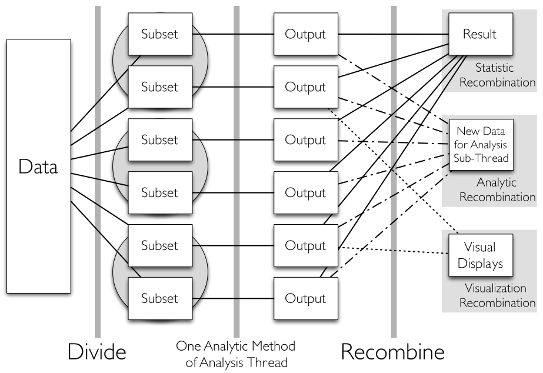
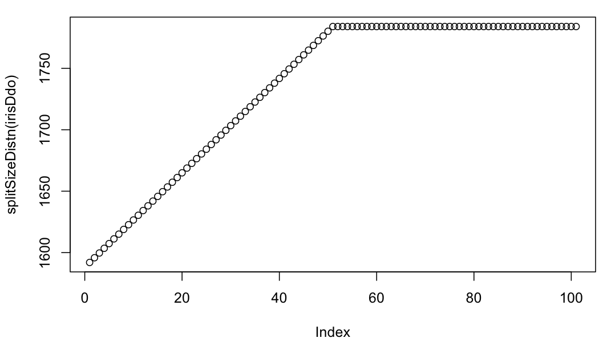
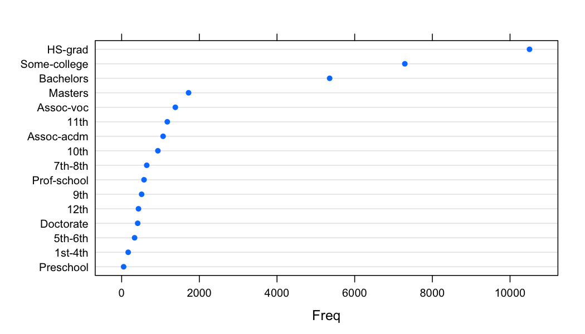
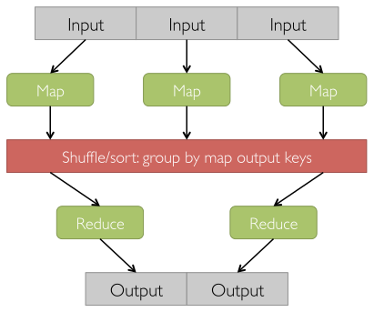
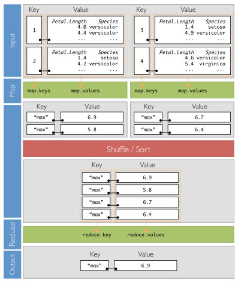
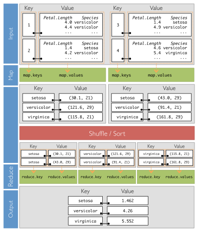
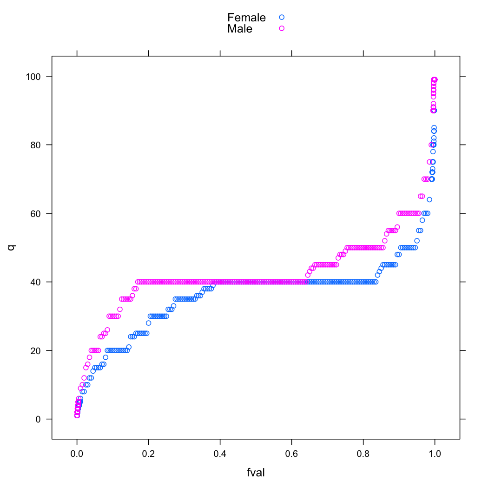
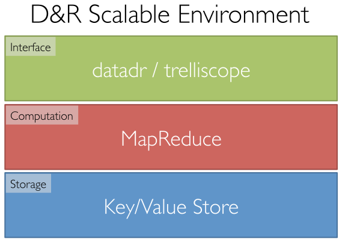
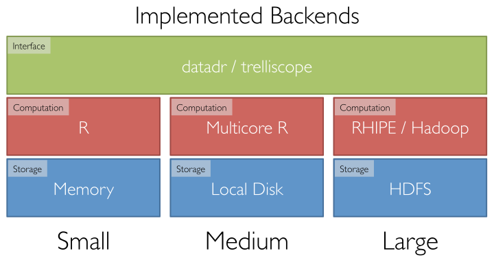

Background
This tutorial covers an implementation of Divide and Recombine (D&R) in the R statistical programming environment, called datadr.
The goal of D&R is to provide an environment for data analysts to carry out deep statistical analysis of large, complex data with as much ease and flexibility as is possible with small datasets.
D&R is accomplished by dividing data into meaningful subsets, applying analytical methods to those subsets, and recombining the results. Recombinations can be numerical or visual. For visualization in the D&R framework, see trelliscope.
The diagram below is a visual representation of the D&R process.

The raw data is stored in some arbitrary structure. We apply a division method to it to obtain a meaningful partitioning. Then we attack this partitioning with several visual and numerical recombination methods, where we apply the method independently to each subset and combine the results. There are many forms of divisions and recombinations, many of which will be covered in this tutorial.
A clearer picture of how D&R works should be reached by reading and trying out the examples in the documentation. It is also recommended to read the references below.
Outline
- First, we cover the foundational D&R data structure, key-value pairs, and how they are used to build distributed data objects and distributed data frames.
- Next, we provide an introduction to the high-level division and recombination methods in
datadr. - Then we discuss MapReduce -- the lower-level language for accomplishing D&R tasks -- which is the engine for the higher-level D&R methods. It is anticipated that the high-level language will be sufficient for most analysis tasks, but the lower-level approach is also exposed for special cases.
- We then cover some division-agnostic methods that do various computations across the entire data set, regardless of how it is divided, such as all-data quantiles.
- For all of these discussions, we use small data sets that fit in memory for illustrative purposes. This way everyone can follow along without having a large-scale backend like Hadoop running and configured. However, the true power of D&R is with large data sets, and after introducing all of this material, we cover different backends for computation and storage that are currently supported for D&R. The interface always remains the same regardless of the backend, but there are various things to discuss for each case. The backends discussed are:
- in-memory / single core R: ideal for small data
- local disk / multicore R: ideal for medium-sized data (too big for memory, small enough for local disk)
- Hadoop Distributed File System (HDFS) / RHIPE / Hadoop MapReduce: ideal for very large data sets
- We also provide R source files for all of the examples throughout the documentation.
Reference
Related projects:
- RHIPE: the engine that makes D&R work for large datasets
- trelliscope: the visualization companion to
datadr
References:
Getting Started
It is easy to get up and running with datadr. One needs to have the devtools package installed (available on CRAN), after which the datadr package can simply be installed with the following:
library(devtools)
install_github("datadr", "hafen")
Then we load the package:
library(datadr)
and we are ready to go.
RHIPE
Simply installing datadr on a local workstation is sufficient for trying out the framework with small and medium-sized data sets. For very large data sets, however, the RHIPE backend is necessary.
RHIPE is the R and Hadoop Integrated Programming Environment. It provides a way to execute Hadoop MapReduce jobs completely from within R and with R data structures.
To install and use RHIPE, the following are required:
- A cluster of machines (a single node can be used but it pointless outside of testing) -- these machines can be commodity workstations
- Hadoop installed and configured on the cluster
- RHIPE and its dependencies (protocol buffers) installed on all the nodes
(1) is often a large barrier to entry. (2) can require a lot of patience and know-how. (3) isn't too difficult.
These requirements are generally enough of a hinderance that only people very serious about scalable data analysis have the perseverance to get a system running. Unfortunately, this is currently the price to pay for scalability. We are working on providing easier access and better documentation for getting set up with this computing platform.
Key-Value Pairs
The most basic data structure in D&R is a key-value pair which is simply a data structure with key and value elements, each of which can have any data structure.
Key-value pairs in datadr
In datadr, key-value pairs are R lists with two elements, one for the key and one for the value. For example,
# simple key-value pair example
list(1:5, rnorm(10))
[[1]]
[1] 1 2 3 4 5
[[2]]
[1] -1.2071 0.2774 1.0844 -2.3457 0.4291 0.5061 -0.5747 -0.5466
[9] -0.5645 -0.8900
is a key-value pair with integers 1-5 as the key and 10 random normals as the value. Typically, a key is used as a unique identifier for the value. For datadr it is recommended to make the key a simple string when possible.
Key-value pair collections
D&R data objects are made up of collections of key-value pairs. In datadr, these are represented as lists of key-value pair lists. As an example, consider the iris data set, which consists of measurements of 4 aspects for 50 flowers from each of 3 species of iris. Suppose we would like to split the sepal measurements of the iris data into key-value pairs by species:
# create by-species key-value pairs
irisKV <- list(
list("setosa", subset(iris, Species=="setosa")[,1:2]),
list("versicolor", subset(iris, Species=="versicolor")[,1:2]),
list("virginica", subset(iris, Species=="virginica")[,1:2])
)
irisKV
[[1]]
[[1]][[1]]
[1] "setosa"
[[1]][[2]]
Sepal.Length Sepal.Width
1 5.1 3.5
2 4.9 3.0
3 4.7 3.2
4 4.6 3.1
5 5.0 3.6
[ reached getOption("max.print") -- omitted 45 rows ]
[[2]]
[[2]][[1]]
[1] "versicolor"
[[2]][[2]]
Sepal.Length Sepal.Width
51 7.0 3.2
52 6.4 3.2
53 6.9 3.1
54 5.5 2.3
55 6.5 2.8
[ reached getOption("max.print") -- omitted 45 rows ]
[[3]]
[[3]][[1]]
[1] "virginica"
[[3]][[2]]
Sepal.Length Sepal.Width
101 6.3 3.3
102 5.8 2.7
103 7.1 3.0
104 6.3 2.9
105 6.5 3.0
[ reached getOption("max.print") -- omitted 45 rows ]
The result is a list of 3 key-value pairs. We chose the species to be the key and the corresponding data frame of sepal measurements to be the value for each pair.
This example shows how we can partition our data into key-value pairs that have meaning -- each subset represents measurements for one species. The ability to divide the data up into pieces allows us to distribute datasets that might be too large for a single disk across multiple machines, and also allows us to distribute computation, because in recombination we apply methods independently to each subset.
Here, we manually created the partition by species, but datadr provides simple mechanisms for specifying divisions, which we will cover later in the tutorial. Prior to doing that, however, we need to discuss how collections of key-value pairs are represented in datadr as distributed data objects.
Applying functions to key-value pairs
As a final note on key-value pairs before moving on to distributed data objects, this is a good place to discuss how functions are applied to key-value pairs in datadr. There are many places in datadr methods where you can specify functions that you want to have applied to each key-value pair for various purposes. These include:
transFn: an argument toddo()preTransFn,postTransFn,bsvFn, andfilterFn: arguments todivide()apply: an argument torecombine()panelFnandcogFn: arguments tomakeDisplay()in thetrelliscopepackage
There is a general approach for flexibly specifying functions that operate on key-value pairs in datadr. In some cases, you may want both the key and value to be available in the function for your code to operate on, but many times all you care about is applying the function to the value.
To keep the writing of such functions simple, in datadr, a check is made to see how many formal arguments your function has. If it has one argument, that argument is treated as the value. If it has two arguments, the first is treated as the key and the second as the value. Handling of this logic is done by a function kvApply(fn, kvPair).
For example, suppose I want to apply a function computing the mean sepal length to the first key-value pair of the irisKV data:
# kvApply example operating on just value
meanSepalLength1 <- function(v)
mean(v$Sepal.Length)
kvApply(meanSepalLength1, irisKV[[1]])
[1] 5.006
Here my function meanSepalLength1 only takes one argument so it is passed the value, which is the data frame of sepal measurements for this subset.
However, suppose there is information in the key that I would like to include in my computation or output. For example, suppose I want a data frame of the mean tagged by its associated species (the key):
# kvApply example operating on key and value
meanSepalLength2 <- function(k, v)
data.frame(species=k, mean=mean(v$Sepal.Length))
kvApply(meanSepalLength2, irisKV[[1]])
species mean
1 setosa 5.006
My function meanSepalLength2 now takes two arguments, and therefore kvApply will provide it both the key and the value, available in the function as k and v, and the function can use the key to get the species to put in the resulting data frame.
datadr methods that operate on key-value pairs: functions with two arguments are passed the key and value, and functions with one argument are passed only the value.
Distributed Data Objects
In datadr, a collection of key-value pairs along with attributes about the collection constitute a distributed data object (ddo). Most datadr operations require "ddo" objects, and hence it is important to represent key-value pair collections as such.
Initializing a "ddo" object
To initialize a collection of key-value pairs as a distributed data object, we use the ddo() function:
# create ddo object from irisKV
irisDdo <- ddo(irisKV)
* Getting basic 'ddo' attributes...
ddo() simply takes the collection of key-value pairs and attaches additional attributes to the resulting "ddo" object. Note that in this example, since the data is in memory, we are supplying the data directly as the argument to ddo(). For larger datasets stored in more scalable backends, instead of passing the data directly, a connection that points to where the key-value pairs are stored is provided. This is discussed in more detail in the Store/Compute Backends sections.
Objects of class "ddo" have several methods that can be invoked on them. The most simple of these is a print method:
irisDdo
Distributed data object of class 'kvMemory' with attributes:
'ddo' attribute | value
----------------+-----------------------------------------------------------
keys | keys are available through getKeys(dat)
totSize | 5.57 KB
nDiv | 3
splitSizeDistn | [empty] call updateAttributes(dat) to get this value
example | use kvExample(dat) to get an example subset
bsvInfo | [empty] no BSVs have been specified
In-memory data connection
The print method shows several attributes that have been computed for the data.
"ddo" attributes
From the printout of irisDdo, we see that a "ddo" object has several attributes. The most basic ones:
totSize: The total size of the data is 6 KB (that's some big data!)nDiv: There are 3 divisions
We can look at the keys with
# look at irisDdo keys
getKeys(irisDdo)
$`946a2c38121bed59091a362f5015327e`
[1] "setosa"
$fa66f5fefadcc79a57a5afe78fe680db
[1] "versicolor"
$b313f00809c319b9b5918795d13ca47a
[1] "virginica"
We can also get an example key-value pair with
# look at an example key-value pair of irisDdo
kvExample(irisDdo)
[[1]]
[1] "setosa"
[[2]]
Sepal.Length Sepal.Width
1 5.1 3.5
2 4.9 3.0
3 4.7 3.2
4 4.6 3.1
5 5.0 3.6
[ reached getOption("max.print") -- omitted 45 rows ]
kvExample is useful for obtaining a subset key-value pair against which we can test out different analytical methods before applying them across the entire data set.
The other attributes, splitSizeDistn and bsvInfo are empty. bsvInfo provides information about between subset variables (BSVs), which we will discuss later.
The splitSizeDistn attribute provides information about the quantiles of the distribution of the size of each division. With very large data sets with a large number of subsets, this can be useful for getting a feel for how uniform the subset sizes are.
The splitSizeDistn attribute and more that we will see in the future are not computed by default when ddo() is called. This is because it requires a computation over the data set, which can take some time with very large datasets, and may not always be desired or necessary.
Updating attributes
If you decide at any point that you would like to update the attributes of your "ddo" object, you can call:
# update irisDdo attributes
irisDdo <- updateAttributes(irisDdo)
* Running map/reduce to get missing attributes...
* Getting basic 'ddo' attributes...
irisDdo
Distributed data object of class 'kvMemory' with attributes:
'ddo' attribute | value
----------------+-----------------------------------------------------------
keys | keys are available through getKeys(dat)
totSize | 5.57 KB
nDiv | 3
splitSizeDistn | use splitSizeDistn(dat) to get distribution
example | use kvExample(dat) to get an example subset
bsvInfo | [empty] no BSVs have been specified
In-memory data connection
The splitSizeDistn attribute is now available. We can look at it with the accessor splitSizeDistn():
# plot distribution of the size of the key-value pairs
plot(splitSizeDistn(irisDdo))

Another way to get updated attributes is at the time the "ddo" object is created, by setting update=TRUE:
# update at the time ddo() is called
irisDdo <- ddo(irisKV, update=TRUE)
* Getting basic 'ddo' attributes...
* Running map/reduce to get missing attributes...
* Getting basic 'ddo' attributes...
Note about storage and computation
Notice the first and final lines of output from the irisDdo object printout. It states that the object is of class "kvMemory" (key-value pairs in memory), and that it has an "in-memory data connection". Here we are playing with a very small data set, but this package is designed to scale.
We will talk about other backends for storing and processing larger data sets that don't fit in memory or even on your workstation's disk. The key here is that the interface always stays the same, regardless of whether we are working with terabytes of kilobytes of data.
Accessing subsets
We can access subsets of the data by key or by index:
irisDdo[["setosa"]]
[[1]]
[1] "setosa"
[[2]]
Sepal.Length Sepal.Width
1 5.1 3.5
2 4.9 3.0
3 4.7 3.2
4 4.6 3.1
5 5.0 3.6
[ reached getOption("max.print") -- omitted 45 rows ]
irisDdo[[1]]
[[1]]
[1] "setosa"
[[2]]
Sepal.Length Sepal.Width
1 5.1 3.5
2 4.9 3.0
3 4.7 3.2
4 4.6 3.1
5 5.0 3.6
[ reached getOption("max.print") -- omitted 45 rows ]
irisDdo[c("setosa", "virginica")]
[[1]]
[[1]][[1]]
[1] "setosa"
[[1]][[2]]
Sepal.Length Sepal.Width
1 5.1 3.5
2 4.9 3.0
3 4.7 3.2
4 4.6 3.1
5 5.0 3.6
[ reached getOption("max.print") -- omitted 45 rows ]
[[2]]
[[2]][[1]]
[1] "virginica"
[[2]][[2]]
Sepal.Length Sepal.Width
101 6.3 3.3
102 5.8 2.7
103 7.1 3.0
104 6.3 2.9
105 6.5 3.0
[ reached getOption("max.print") -- omitted 45 rows ]
irisDdo[1:2]
[[1]]
[[1]][[1]]
[1] "setosa"
[[1]][[2]]
Sepal.Length Sepal.Width
1 5.1 3.5
2 4.9 3.0
3 4.7 3.2
4 4.6 3.1
5 5.0 3.6
[ reached getOption("max.print") -- omitted 45 rows ]
[[2]]
[[2]][[1]]
[1] "versicolor"
[[2]][[2]]
Sepal.Length Sepal.Width
51 7.0 3.2
52 6.4 3.2
53 6.9 3.1
54 5.5 2.3
55 6.5 2.8
[ reached getOption("max.print") -- omitted 45 rows ]
Accessing by key is much simpler when the key is a character string, but subsetting works even when passing a list of non-string keys.
Distributed Data Frames
Key-value pairs in distributed data objects can have any structure. If we constrain the values to be data frames or readily transformable into data frames, we can represent the object as a distributed data frame (ddf). Having a uniform data frame structure for the values provides several benefits and data frames are required for specifying division methods.
Initializing a "ddf" object
Our irisKV data we created earlier has values that are data frames, so we can cast it as a distributed data frame like this:
# create ddf object from irisKV
irisDdf <- ddf(irisKV, update=TRUE)
* Getting basic 'ddo' attributes...
* Getting basic 'ddf' attributes...
* Running map/reduce to get missing attributes...
* Getting basic 'ddo' attributes...
irisDdf
Distributed data object of class 'kvMemory' with attributes:
'ddo' attribute | value
----------------+-----------------------------------------------------------
keys | keys are available through getKeys(dat)
totSize | 5.57 KB
nDiv | 3
splitSizeDistn | use splitSizeDistn(dat) to get distribution
example | use kvExample(dat) to get an example subset
bsvInfo | [empty] no BSVs have been specified
'ddf' attribute | value
----------------+-----------------------------------------------------------
vars | Sepal.Length(num), Sepal.Width(num)
transFn | identity (original data is a data frame)
nRow | 150
splitRowDistn | use splitRowDistn(dat) to get distribution
summary | use summary(dat) to see summaries
In-memory data connection
"ddf" attributes
The printout of irisDdf above shows data-frame-related attributes (which were automatically updated because we specified update=TRUE) in addition to the "ddo" attributes we saw earlier. These include:
vars: a list of the variablestransFn: a transformation function (more on this later)nrow: the total number of rows in the data setsplitRowDistn: which is similar tosplitSizeDistn, except that it is the distribution of the number of rows of data in each subsetsummaryattribute holds summary statistics about each variable in the data frame
The summary attribute can be useful for later computations, where doing it once up front is more efficient than . A good example is quantile estimation (see ?quantile.ddo), where the range is required to get a good quantile approximation. Summary statistics are all computed simultaneously in one MapReduce job with a call to updateAttributes().
The numerical summary statistics are computed using a numerically stable algorithm (cite). Summary statistics include:
For each numeric variable:
nna: number of missing valuesstats: list of mean, variance, skewness, kurtosisrange: min, max
For each categorical variable:
nobs: number of observationsnna: number of missing valuesfreqTable: a data frame containing a frequency table
Summaries can be accessed by:
# look at irisDdf summary stats
summary(irisDdf)
$Sepal.Length
$Sepal.Length$nna
[1] 0
$Sepal.Length$stats
$Sepal.Length$stats$mean
[1] 5.843
$Sepal.Length$stats$var
[1] 0.6857
$Sepal.Length$stats$skewness
[1] 0.3118
$Sepal.Length$stats$kurtosis
[1] 2.426
$Sepal.Length$range
[1] 4.3 7.9
$Sepal.Width
$Sepal.Width$nna
[1] 0
$Sepal.Width$stats
$Sepal.Width$stats$mean
[1] 3.057
$Sepal.Width$stats$var
[1] 0.19
$Sepal.Width$stats$skewness
[1] 0.3158
$Sepal.Width$stats$kurtosis
[1] 3.181
$Sepal.Width$range
[1] 2.0 4.4
attr(,"class")
[1] "ddfSummary" "list"
In the future, there will be a better print method, etc. for summary results.
Data frame-like "ddf" methods
Note that with an object of class "ddf", you can use some of the methods that apply to regular data frames:
nrow(irisDdf)
[1] 150
ncol(irisDdf)
[1] 2
names(irisDdf)
[1] "Sepal.Length" "Sepal.Width"
Passing a data frame to ddo() and ddf()
It is worth noting that it is possible to pass a single data frame to ddo() or ddf(). The result is a single key-value pair with the data frame as the value, and "" as the key. This is an option strictly for convenience and with the idea that further down the line operations will be applied that split the data up into a more useful set of key-value pairs. Here is an example:
# initialize ddf from a data frame
irisDf <- ddf(iris, update=TRUE)
* Getting basic 'ddo' attributes...
* Getting basic 'ddf' attributes...
* Running map/reduce to get missing attributes...
* Getting basic 'ddo' attributes...
This of course only makes sense for data small enough to fit in memory in the first place. In the backends section, we will discuss other backends for larger data and how data can be added to objects in these cases.
Coercing to "ddf" with a Transformation Function
There may be times where we want to create a ddf but we have data with values that either aren't stored as a data frame or we don't want to store as a data frame, but we want them to act like data frames. In this case, there is an argument to ddf() called transFn which transforms the data into a data frame prior to any computation is carried out on it.
Consider the following collection of key-value pairs, for example:
# example of some "less-structured" key-value pairs
people <- list(
list("fred",
list(age=74, statesLived=c("NJ", "MA", "ND", "TX"))
),
list("bob",
list(age=42, statesLived="NJ")
)
)
The values are lists, not data frames. In this case, the values are easily coercible to data frames using as.data.frame:
# cast first value as data frame
as.data.frame(people[[1]][[2]])
age statesLived
1 74 NJ
2 74 MA
3 74 ND
4 74 TX
Since people is a list of key-value pairs, we extract the first pair with [[1]], and then get the value of the pair with [[2]].
We see that as.data.frame is able to coerce the list to a data frame. So if we want to treat people as a distributed data frame, we might simply provide as.data.frame as the transformation function:
# ddf with transFn
peopleDdf <- ddf(people, transFn=as.data.frame)
* Getting basic 'ddo' attributes...
* Getting basic 'ddf' attributes...
ddf() actually tries as.data.frame if the default (identity) does not yield a data frame:
# ddf tries as.data.frame for transFn by default
peopleDdf <- ddf(people)
* Getting basic 'ddo' attributes...
Warning: Data is not strictly a data frame, but coercible using
as.data.frame
* Getting basic 'ddf' attributes...
With this data representation, is what things will look like to datadr methods that need the data to be a data frame:
# get a ddf key-value pair with transFn applied
kvExample(peopleDdf, transform=TRUE)
[[1]]
[1] "fred"
[[2]]
age statesLived
1 74 NJ
2 74 MA
3 74 ND
4 74 TX
But how the data actually is stored is still the same:
# data is still stored unstructured (pre transFn)
kvExample(peopleDdf)
[[1]]
[1] "fred"
[[2]]
[[2]]$age
[1] 74
[[2]]$statesLived
[1] "NJ" "MA" "ND" "TX"
More complex examples will certainly arise where a non-trivial transformation function is required to cast the data as a data frame.
This transformation is honored in datadr methods such as divide() and updateAttributes().
High-Level Interface
datadr provides a high-level language for D&R that simply consists of functions divide() for performing division, and recombine() for performing recombinations. The goal is for these methods to be sufficient for most operations a user might want to carry out. There are several ways these methods can be invoked to perform different tasks, which is outlined in this section.
At their simplest form, divide() and recombine() provide a way to create a persistent partitioning of the data and then perform a lapply-like operation over the data with different ways to combine the results. Being able to easily perform these operations alone provides a lot of power for ad-hoc analysis of very large data sets. However, results from D&R theory and methods continue to be injected into these methods to provide an even more rich environment for analysis.
Division
Division is achieved through the divide() method. The function documentation is available here.
Currently there are two types of divisions supported: conditioning variable, and random replicate. In this section we discuss the major arguments to divide(), the most important of which is by.
The by argument: conditioning variable division
In the previous section, we were looking at a division of the iris data by species. We manually split the data into key-value pairs. We can achieve the same result by doing conditioning variable division:
irisDdf <- ddf(iris)
* Getting basic 'ddo' attributes...
* Getting basic 'ddf' attributes...
# divide irisDdf by species
bySpecies <- divide(irisDdf, by="Species", update=TRUE)
* Verifying parameters...
* Applying division...
* Getting basic 'ddo' attributes...
* Running map/reduce to get missing attributes...
* Getting basic 'ddo' attributes...
divide() must take an object of class "ddo" or "ddf", and will return an object of either "ddo" or "ddf" ("ddf" if the resulting values are data frames).
Since the result of splitting the iris data by species is a data frame, bySpecies is now a "ddf" object. We can inspect it with the following:
bySpecies
Distributed data object of class 'kvMemory' with attributes:
'ddo' attribute | value
----------------+-----------------------------------------------------------
keys | keys are available through getKeys(dat)
totSize | 10.9 KB
nDiv | 3
splitSizeDistn | use splitSizeDistn(dat) to get distribution
example | use kvExample(dat) to get an example subset
bsvInfo | [empty] no BSVs have been specified
'ddf' attribute | value
----------------+-----------------------------------------------------------
vars | Sepal.Length(num), Sepal.Width(num), and 2 more
transFn | identity (original data is a data frame)
nRow | 150
splitRowDistn | use splitRowDistn(dat) to get distribution
summary | use summary(dat) to see summaries
Division:
Type: Conditioning variable division
Conditioning variables: Species
In-memory data connection
We see the same printout as we had with our manually-created division, with the addition of information about how the data was divided.
In the above example, conditioning variable division was specified with the by argument. Here, simply specifying a character string or vector of character strings (for multiple conditioning variables) will invoke conditioning variable division. A more formal way to achieve this is by using condDiv() to build the division specification:
# divide irisDdf by species using condDiv()
bySpecies <- divide(irisDdf, by=condDiv("Species"), update=TRUE)
* Verifying parameters...
* Applying division...
* Getting basic 'ddo' attributes...
* Running map/reduce to get missing attributes...
* Getting basic 'ddo' attributes...
Using condDiv() is not necessary but follows the general idea of using a function to build a division specification that is and will be followed for other division methods.
Here's what a subset of the divide data looks like:
# look at a subset of bySpecies
bySpecies[[1]]
[[1]]
[1] "Species=setosa"
[[2]]
Sepal.Length Sepal.Width Petal.Length Petal.Width
1 5.1 3.5 1.4 0.2
2 4.9 3.0 1.4 0.2
[ reached getOption("max.print") -- omitted 48 rows ]
Note that the "Species" column is missing in the value data frame. This is because it is the variable we split on, and therefore has the same value for the entire subset. All conditioning variables for a given subset are stored in a "splitVars" attribute, and can be retrieved by getSplitVars():
# get the split variable (Species) for some subsets
getSplitVars(bySpecies[[1]])
$Species
[1] "setosa"
getSplitVars(bySpecies[[2]])
$Species
[1] "versicolor"
The keys for the division result are strings that specify how the data was divided:
# look at bySpecies keys
getKeys(bySpecies)
$`4a7a45a288b320d14537ba28cfdb8db5`
[1] "Species=setosa"
$`88f9dd48ca10366898776cdf8fdc5418`
[1] "Species=versicolor"
$bc1f636f7428e8dc45d7d65ee4c78a45
[1] "Species=virginica"
The by argument: random replicate division
Another way to divide data that is currently implemented is random replicate division. For this, we use the division specification function rrDiv(). This function allows you to specify the number of rows you would like each random subset to have, and optionally a random seed to use for the random assignment of rows to subsets.
Suppose we want to split the iris data into random subsets with roughly 10 rows per subset:
# divide iris data into random subsets of 10 rows per subset
set.seed(123)
byRandom <- divide(bySpecies, by=rrDiv(10), update=TRUE)
* Verifying parameters...
* Applying division...
* Getting basic 'ddo' attributes...
* Running map/reduce to get missing attributes...
* Getting basic 'ddo' attributes...
Note that we passed bySpecies as the input data. We could just as well have specified irisDdf or any other division of the iris data. The input partitioning doesn't matter.
byRandom
Distributed data object of class 'kvMemory' with attributes:
'ddo' attribute | value
----------------+-----------------------------------------------------------
keys | keys are available through getKeys(dat)
totSize | 24.46 KB
nDiv | 15
splitSizeDistn | use splitSizeDistn(dat) to get distribution
example | use kvExample(dat) to get an example subset
bsvInfo | [empty] no BSVs have been specified
'ddf' attribute | value
----------------+-----------------------------------------------------------
vars | Sepal.Length(num), Sepal.Width(num), and 2 more
transFn | identity (original data is a data frame)
nRow | 150
splitRowDistn | use splitRowDistn(dat) to get distribution
summary | use summary(dat) to see summaries
Division:
Type: Random replicate divison
Approx. number of rows in each division: 10
In-memory data connection
We see there are still 150 rows (as there should be), but now there are 15 subsets.
We can look at the distribution of the of the number of rows in each subset:
# plot distribution of the number of rows in each subset
plot(splitRowDistn(byRandom))

We see that there are not exactly 10 rows in each subset, but 10 rows on average. The random replicate algorithm simply randomly assigns each row of the input data into the number of bins \(K\) determined by the total number of rows \(n\) in the data divided by the desired number of rows per subset. Thus the distribution of the number of rows in each subset is like a draw from a multinomial with number of trials \(n\) and event probabilities of being put into one of \(K\) bins as \(p_i=1/K, i=1, \ldots, K\). We are working on a scalable approach to randomly assign exactly \(n/K\) rows to each subset.
The keys for random replicate divided data are simply labels indicating the bin:
getKeys(byRandom)
$`1eba819cbcd7263e1862fa9d7d4be2d9`
[1] "rr_1"
$aa32d056aba0e16736e7a8a5c72d271e
[1] "rr_10"
$`2d67663e85cfc7d9211b1f66c04f4aca`
[1] "rr_11"
$`2f43184cb1e3e1313c04e1ea1b36297c`
[1] "rr_12"
$`8279729719e3b3c72580d43400e94725`
[1] "rr_13"
$`7a033d10212755ca848e3d49adb12cbd`
[1] "rr_14"
$`15e9c08531fcde946adf570a77665480`
[1] "rr_15"
$`2973567a41c2ec84cd5c9cc748ae9731`
[1] "rr_2"
$`2d4e834b37e65b87515e53b2024db8f8`
[1] "rr_3"
$`4a724f19d274e3186324e79429144fdb`
[1] "rr_4"
[ reached getOption("max.print") -- omitted 5 entries ]
We will show an example of random replicate division in use later in this section.
The preTransFn argument
divide() does not know how to break data into pieces unless it is dealing with data frames -- how would it know how to break up arbitrary data structures? So the most divide()-friendly input data type is "ddf" objects. But sometimes there is input data that is not "ddf" and we don't want to take the extra step of converting it to "ddf". Instead, we can pass a "ddo" object to divide() along with preTransFn, which applies a transformation function to each subset prior to division.
preTransFn can also be used when the input is "ddf" but we would like to make some change to it prior to division. For example, suppose we only want divide() to operate on the Sepal.Length column:
# preTransFn to extract Sepal.Length from a value in a key-value pair
extractSepalLength <- function(v)
v[, c("Sepal.Length", "Species")]
# test it on a subset to make sure it is doing what we want
kvApply(extractSepalLength, irisDdf[[1]])
Sepal.Length Species
1 5.1 setosa
2 4.9 setosa
3 4.7 setosa
4 4.6 setosa
5 5.0 setosa
[ reached getOption("max.print") -- omitted 145 rows ]
# apply division with preTransFn
bySpeciesSL <- divide(irisDdf, by="Species", preTransFn=extractSepalLength)
* Verifying parameters...
* Applying division...
* Getting basic 'ddo' attributes...
It is always a good practice to test any function that operates on key-value pairs on a subset prior to running it over the entire data set, as we have done here (if you missed it, see the discussion on applying functions to key-value pairs).
preTransFn is applied to each subset of the input data prior to dividing by species. The result is a data frame of just Sepal.Length divided by species.
Using preTransFn to create a derived conditioning variable
A common use of preTransFn when the input data is a "ddf" object is to create a derived variable upon which we will perform division. For example, suppose we would like to divide the iris data by both Species and a discretized version of Sepal.Length.
First, let's get a feel for the Sepal.Length variable:
# get summary statistics for Sepal.Length
summary(bySpecies)$Sepal.Length
$nna
[1] 0
$stats
$stats$mean
[1] 5.843
$stats$var
[1] 0.6857
$stats$skewness
[1] 0.3118
$stats$kurtosis
[1] 2.426
$range
[1] 4.3 7.9
We see that its range is from 4.3 to 7.9. Suppose we want to bin it by the integer. We can create a new variable slCut by defining a preTransFn that adds this column to the data frame. Then we specify that we want to divide the data both on Species, but also slCut, which doesn't exist in the input data but will exist in the data prior to division thanks to preTransFn.
# preTransFn to add a variable "slCut" of discretized Sepal.Length
sepalLengthCut <- function(v) {
v$slCut <- cut(v$Sepal.Length, seq(0, 8, by=1))
v
}
# test it on a subset
kvApply(sepalLengthCut, irisDdf[[1]])
Sepal.Length Sepal.Width Petal.Length Petal.Width Species slCut
1 5.1 3.5 1.4 0.2 setosa (5,6]
2 4.9 3.0 1.4 0.2 setosa (4,5]
3 4.7 3.2 1.3 0.2 setosa (4,5]
[ reached getOption("max.print") -- omitted 147 rows ]
# divide on Species and slCut
bySpeciesSL <- divide(irisDdf, by=c("Species", "slCut"),
preTransFn = sepalLengthCut)
* Verifying parameters...
* Applying division...
* Getting basic 'ddo' attributes...
Since we added the variable slCut in our preTransFn, we can specify for divide to split on that variable.
Let's look at one subset:
bySpeciesSL[[3]]
[[1]]
[1] "Species=versicolor|slCut=(4,5]"
[[2]]
Sepal.Length Sepal.Width Petal.Length Petal.Width
1 4.9 2.4 3.3 1
2 5.0 2.0 3.5 1
3 5.0 2.3 3.3 1
As the key indicates, the species for this subset is "versicolor" and the sepal length is in the range (4,5]. Recall that we can access the split variables for this subset with:
getSplitVars(bySpeciesSL[[3]])
$Species
[1] "versicolor"
$slCut
[1] "(4,5]"
The postTransFn argument
postTransFn provides a way for you to change the structure of the data after division, but prior to it being written to disk. This can be used to get the data out of data frame mode (it must be a data frame just prior to and after division) or to subset or remove columns, etc.
The 'spill' argument
Many times a conditioning variable division of interest will result in a long-tailed distribution of the data belonging to each subset, such that the data going into some subsets will get too large (remember that each subset must be small enough to be processed efficiently in memory). The spill argument in divide() allows you to specify a limit to the number of rows that can belong in a subset, after which additional records will get "spilled" into a new subset.
For example, suppose we want no more than 12 rows per subset in our by-species division:
# divide iris data by species, spilling to new key-value after 12 rows
bySpeciesSpill <- divide(irisDdf, by="Species", spill=12, update=TRUE)
* Verifying parameters...
* Applying division...
* Getting basic 'ddo' attributes...
* Running map/reduce to get missing attributes...
* Getting basic 'ddo' attributes...
Let's see what our subsets look like now:
# look at some subsets
bySpeciesSpill[[1]]
[[1]]
[1] "Species=setosa_1"
[[2]]
Sepal.Length Sepal.Width Petal.Length Petal.Width
1 5.1 3.5 1.4 0.2
2 4.9 3.0 1.4 0.2
[ reached getOption("max.print") -- omitted 10 rows ]
bySpeciesSpill[[5]]
[[1]]
[1] "Species=setosa_5"
[[2]]
Sepal.Length Sepal.Width Petal.Length Petal.Width
1 5.3 3.7 1.5 0.2
2 5.0 3.3 1.4 0.2
There are 5 different subsets for each species. For example, "Species=setosa" has subset with keys: "Species=setosa_1", ..., "Species=setosa_5". The first four subsets have 12 rows in each (each spilling into a new subset after it was filled with 12 rows), and the fifth subset has 2 rows, a total of 50 rows for "Species=setosa".
The 'filter' argument
The filter argument to divide() is an optional function that is applied to each candidate post-division key-value pair to determine whether it should be part of the resulting division. A common case of when the filter argument is useful is when a division may result in a very large number of very small subsets and we are only interested in studying subsets with adequate size.
As an example, consider the iris splitting with spill=12 from before. Suppose that in addition to spilling records, we also only want to keep subsets that have more than 5 records in them.
# divide iris data by species, spill, and filter out subsets with <=5 rows
bySpeciesFilter <- divide(irisDdf, by="Species", spill=12,
filter=function(v) nrow(v) > 5, update=TRUE)
* Verifying parameters...
* Applying division...
* Getting basic 'ddo' attributes...
* Running map/reduce to get missing attributes...
* Getting basic 'ddo' attributes...
bySpeciesFilter
Distributed data object of class 'kvMemory' with attributes:
'ddo' attribute | value
----------------+-----------------------------------------------------------
keys | keys are available through getKeys(dat)
totSize | 30.79 KB
nDiv | 12
splitSizeDistn | use splitSizeDistn(dat) to get distribution
example | use kvExample(dat) to get an example subset
bsvInfo | [empty] no BSVs have been specified
'ddf' attribute | value
----------------+-----------------------------------------------------------
vars | Sepal.Length(num), Sepal.Width(num), and 2 more
transFn | identity (original data is a data frame)
nRow | 144
splitRowDistn | use splitRowDistn(dat) to get distribution
summary | use summary(dat) to see summaries
Division:
Type: Conditioning variable division
Conditioning variables: Species
In-memory data connection
The filter function simply returns TRUE if we want to keep the subset and FALSE if not.
Now we have 144 rows and 12 divisions - the 3 subsets with 2 rows were omitted from the result.
Note that the filter is applied to the data prior to the application of postTransFn.
Recombination
In this section, we cover basic usage of the recombine() method. The function documentation is available here.
recombine() can be applied to any "ddo" or "ddf" object. It is not necessary to give it an object that was created using divide(), but some recombination methods may not be valid on just any input (such as recombinations that assume random replicate division).
Aside from the data argument (which of course is the input "ddo" or "ddf" object), the main arguments in recombine() are apply and combine. We will see several examples of different usage throughout this section, but first we provide an overview of the apply and combine arguments.
apply argument
The apply argument can either be a user-defined function that will be applied to each key-value pair, or a built-in apply function for performing specific tasks. Custom apply functions currently implemented include:
drGLM(): a proof-of-concept for fitting generalized linear models in the D&R paradigmdrBLB(): a proof-of-concept implementation of the bag of little bootstraps, which falls under the D&R paradigm.
The combine argument tells recombine() how to collate the results of apply. Currently available combine methods include
combCollect(): (the default) - returns a list of key-value pairs of the result ofapplybeing applied to each subsetcombRbind(): forapplyfunctions that return data frames, thiscombinemethod rbinds all of the results into a single data framecombMeanCoef(): expects each
Most recombine() operations currently are done with a custom apply function using either combCollect() or combRbind() to combine the results. We will see examples of these throughout this section.
Much of the anticipated future work for datadr is the construction of several apply-combine pairs that are useful for different analysis tasks. The apply/combine pairs drGLM()-combMeanCoef() and drBLB()-combMeanCoef() are two initial examples.
Simple lapply()-like recombination
Some of the most common uses of recombine() are simple lapply()-like operations, where we simply want to apply a function to each subset and pull the results back in.
For example, suppose we would like to compute the mean petal width for each species in our bySpecies division:
recombine(bySpecies, apply=function(v) mean(v$Petal.Width))
* Verifying suitability of 'apply' for division type...
* Verifying suitability of 'output' for specified 'combine'...
* Testing the division method on a subset...
* Applying to all subsets...
* Getting basic 'ddo' attributes...
[[1]]
[[1]][[1]]
[1] "Species=setosa"
[[1]][[2]]
[1] 0.246
[[2]]
[[2]][[1]]
[1] "Species=versicolor"
[[2]][[2]]
[1] 1.326
[[3]]
[[3]][[1]]
[1] "Species=virginica"
[[3]][[2]]
[1] 2.026
Here, the default combCollect() was used to combine the results, giving us a list of key-value pairs with the value being the mean petal width.
Suppose we would like the result to be a data frame. We can do this with combRbind():
recombine(bySpecies, apply=function(v) mean(v$Petal.Width), comb=combRbind())
* Verifying suitability of 'apply' for division type...
* Verifying suitability of 'output' for specified 'combine'...
* Testing the division method on a subset...
* Applying to all subsets...
* Getting basic 'ddo' attributes...
Species val
1 setosa 0.246
2 versicolor 1.326
3 virginica 2.026
The apply function here returns a scalar which is coerced into a data frame. Note that by default if the input data keys are characters, they will be added to the data frame. Here is another example of using combRbind() with an apply function that returns a data frame:
meanApply <- function(v) {
data.frame(mpw=mean(v$Petal.Width), mpl=mean(v$Petal.Length))
}
recombine(bySpecies, apply=meanApply, comb=combRbind())
* Verifying suitability of 'apply' for division type...
* Verifying suitability of 'output' for specified 'combine'...
* Testing the division method on a subset...
* Applying to all subsets...
* Getting basic 'ddo' attributes...
Species mpw mpl
1 setosa 0.246 1.462
2 versicolor 1.326 4.260
3 virginica 2.026 5.552
Sometimes we would like the result to be a new division object, in which case we use combDdo()
recombine(bySpecies, apply=meanApply, comb=combDdo())
* Verifying suitability of 'apply' for division type...
* Verifying suitability of 'output' for specified 'combine'...
* Testing the division method on a subset...
* Applying to all subsets...
* Getting basic 'ddo' attributes...
Distributed data object of class 'kvMemory' with attributes:
'ddo' attribute | value
----------------+-----------------------------------------------------------
keys | keys are available through getKeys(dat)
totSize | 5.37 KB
nDiv | 3
splitSizeDistn | [empty] call updateAttributes(dat) to get this value
example | use kvExample(dat) to get an example subset
bsvInfo | [empty] no BSVs have been specified
In-memory data connection
lapply(), tapply(), etc., the plyr and dplyr packages, and other similar approaches might wondering what the difference is with `datadr`. For notes on this, see the FAQ.
Between-Subset Variables
A useful thing to do when creating a division is to specify between subset variables. More to come here...
D&R Examples
Here are some examples with a new (but still small) data set that illustrate some general use of division and recombination including the use of random replicate division and some different recombination methods to fit a GLM to a dataset.
Although there are different approaches for in-memory data like this one, we will use datadr tools to deal with the data throughout, again remembering that these tools scale.
The data
The data is adult income from the 1994 census database, pulled from the UCI machine learning repository. See ?adult for more details.
First, we load the data (available as part of the datadr package) and turn it into a "ddf" object:
data(adult)
# turn adult into a ddf
adultDdf <- ddf(adult, update=TRUE)
* Getting basic 'ddo' attributes...
* Getting basic 'ddf' attributes...
* Running map/reduce to get missing attributes...
* Getting basic 'ddo' attributes...
adultDdf
Distributed data object of class 'kvMemory' with attributes:
'ddo' attribute | value
----------------+-----------------------------------------------------------
keys | keys are available through getKeys(dat)
totSize | 2.12 MB
nDiv | 1
splitSizeDistn | use splitSizeDistn(dat) to get distribution
example | use kvExample(dat) to get an example subset
bsvInfo | [empty] no BSVs have been specified
'ddf' attribute | value
----------------+-----------------------------------------------------------
vars | age(int), workclass(fac), fnlwgt(int), and 13 more
transFn | identity (original data is a data frame)
nRow | 32561
splitRowDistn | use splitRowDistn(dat) to get distribution
summary | use summary(dat) to see summaries
In-memory data connection
#look at the names
names(adultDdf)
[1] "age" "workclass" "fnlwgt" "education"
[5] "educationnum" "marital" "occupation" "relationship"
[9] "race" "sex"
[ reached getOption("max.print") -- omitted 6 entries ]
We see that there are about 32K observations, and we see the various variables available.
We'll start with some simple exploratory analysis. One variable of interest in the data is education. We can look at the summary statistics to see the frequency distribution of education (which were computed since we specified update=TRUE when we created adultDdf):
library(lattice)
edTable <- summary(adultDdf)$education$freqTable
edTable$var <- with(edTable, reorder(var, Freq, mean))
dotplot(var ~ Freq, data=edTable)

Division by education group
Perhaps we would like to divide our data by education and investigate how some of the other variables behave within education.
Suppose we want to make some changes to the education variable: we want to leave out "Preschool" and create groups "Some-elementary", "Some-middle", and "Some-HS". Of course in a real analysis you would probably want to first make sure you aren't washing any interesting effects out by making these groupings.
We can handle these changes to the education variable using preTransFn in our call to divide(). You might be wondering why not make the changes to the variable in the original data frame prior to doing all of this. For this example, of course we can do that, but suppose this data were, say, 1TB in size. You would probably much rather apply the transformation during the division than create a new set of data.
The following transformation function will achieve the desired result:
# make a preTransFn to group some education levels
edGroups <- function(v) {
v$edGroup <- as.character(v$education)
v$edGroup[v$edGroup %in% c("1st-4th", "5th-6th")] <- "Some-elementary"
v$edGroup[v$edGroup %in% c("7th-8th", "9th")] <- "Some-middle"
v$edGroup[v$edGroup %in% c("10th", "11th", "12th")] <- "Some-HS"
v
}
This adds a variable edGroup with the desired grouping of education levels. We can now divide the data by edGroup. We specify a filterFn to only allow data to be output that does not correspond to "Preschool".
# divide by edGroup and filter out "Preschool"
byEdGroup <- divide(adultDdf, by="edGroup",
preTransFn=edGroups,
filterFn=function(x) x$edGroup[1] != "Preschool",
update=TRUE)
* Verifying parameters...
* Applying division...
Warning: closing unused connection 7 (<-localhost:11966)
Warning: closing unused connection 6 (<-localhost:11966)
Warning: closing unused connection 5 (<-localhost:11966)
* Getting basic 'ddo' attributes...
* Running map/reduce to get missing attributes...
* Getting basic 'ddo' attributes...
byEdGroup
Distributed data object of class 'kvMemory' with attributes:
'ddo' attribute | value
----------------+-----------------------------------------------------------
keys | keys are available through getKeys(dat)
totSize | 3.3 MB
nDiv | 11
splitSizeDistn | use splitSizeDistn(dat) to get distribution
example | use kvExample(dat) to get an example subset
bsvInfo | [empty] no BSVs have been specified
'ddf' attribute | value
----------------+-----------------------------------------------------------
vars | age(int), workclass(cha), fnlwgt(int), and 13 more
transFn | identity (original data is a data frame)
nRow | 32510
splitRowDistn | use splitRowDistn(dat) to get distribution
summary | use summary(dat) to see summaries
Division:
Type: Conditioning variable division
Conditioning variables: edGroup
In-memory data connection
We can look at the distribution of number of people in each education group with the following simple recombination:
# tabulate number of people in each education group
edGroupTable <- recombine(byEdGroup, apply=nrow, combine=combRbind())
* Verifying suitability of 'apply' for division type...
* Verifying suitability of 'output' for specified 'combine'...
* Testing the division method on a subset...
* Applying to all subsets...
* Getting basic 'ddo' attributes...
edGroupTable
edGroup val
1 Assoc-acdm 1067
2 Assoc-voc 1382
3 Bachelors 5355
4 Doctorate 413
5 HS-grad 10501
[ reached getOption("max.print") -- omitted 6 rows ]
A similar dotplot as before can be made with this data.
Investigating data by education group
There are many things we might be interested in doing with our byEdGroup division. We'll just show one quick example.
One thing we might be interested in is how different the distribution of gender is within each of the education groups. One way to do this is to look at the ratio of men to women. We can compute this ratio with a simple recombination:
# compute male/female ratio by education group
sexRatio <- recombine(byEdGroup, apply=function(x) {
tab <- table(x$sex)
data.frame(maleFemaleRatio=tab["Male"] / tab["Female"])
}, combine=combRbind())
* Verifying suitability of 'apply' for division type...
* Verifying suitability of 'output' for specified 'combine'...
* Testing the division method on a subset...
* Applying to all subsets...
* Getting basic 'ddo' attributes...
sexRatio
edGroup maleFemaleRatio
1 Assoc-acdm 1.534
2 Assoc-voc 1.764
3 Bachelors 2.308
4 Doctorate 3.802
5 HS-grad 2.098
[ reached getOption("max.print") -- omitted 6 rows ]
We can visualize it with the following:
# make dotplot of male/female ratio by education group
sexRatio$edGroup <- with(sexRatio, reorder(edGroup, maleFemaleRatio, mean))
dotplot(edGroup ~ maleFemaleRatio, data=sexRatio)

We know the marginal distribution of gender is lopsided to begin with (see summary(byEdGroup)$sex), but we don't know if the sample we are dealing with is biased or not... There are obviously many many directions to go with the exploratory analysis and hopefully these few examples provide a start and a feel for how to go about
One more thing to note about what we have done so far: We have shown a couple of examples of using datadr to summarize the data in different ways and visualize the summaries. This is a good thing to do. But we also want to be able to visualize the subsets in detail. For example, we might want to look at a scatterplot of age vs. hoursperweek. With this small data set, we obviously can pull all subsets in and make a lattice plot or faceted ggplot. However, what if there are thousands or hundreds of thousands of subsets? This is where the trelliscope package -- a visualization companion to datadr -- comes in.
Fitting a GLM to the data
Although the majority of the work we do is quite effective through clever use of generic division and recombination approaches and making heavy use of visualization, it is worthwhile to show some of the approaches of approximating all-data estimates with datadr.
Therefore, we now turn to some examples of ways to apply analytical methods across the entire dataset from within the D&R paradigm. For example, suppose we would like to model the dependence of making more or less than 50K per year on educationnum, hoursperweek, and sex using logistic regression.
Before doing it with datadr, let's first apply the method to the original data frame, so that we can compare the results. Recall again that since this is a small data set, we can do things the "usual" way:
# fit a glm to the original adult data frame
rglm <- glm(incomebin ~ educationnum + hoursperweek + sex, data=adult, family=binomial())
summary(rglm)
Call:
glm(formula = incomebin ~ educationnum + hoursperweek + sex,
family = binomial(), data = adult)
Deviance Residuals:
Min 1Q Median 3Q Max
-2.456 -0.705 -0.429 -0.140 3.115
Coefficients:
Estimate Std. Error z value Pr(>|z|)
(Intercept) -7.23765 0.09520 -76.0 <2e-16 ***
educationnum 0.35785 0.00654 54.7 <2e-16 ***
hoursperweek 0.03299 0.00126 26.2 <2e-16 ***
sexMale 1.21167 0.03679 32.9 <2e-16 ***
---
Signif. codes: 0 '***' 0.001 '**' 0.01 '*' 0.05 '.' 0.1 ' ' 1
(Dispersion parameter for binomial family taken to be 1)
Null deviance: 35948 on 32560 degrees of freedom
Residual deviance: 29472 on 32557 degrees of freedom
AIC: 29480
Number of Fisher Scoring iterations: 5
Now let's compare this to a few datadr approaches. Note that these approaches are currently proof-of-concept only and are meant to illustrate ideas. We will illustrate drGLM() and drBLB().
Fitting a GLM with drGLM()
For the results of drGLM() and drBLB() to be valid, we need a random-replicate division of the data. We will choose a division that provides about 500 rows in each subset and that only has the variables that we care about:
rrAdult <- divide(adultDdf, by=rrDiv(500), update=TRUE,
postTrans=function(x)
x[,c("incomebin", "educationnum", "hoursperweek", "sex")])
* Verifying parameters...
* Applying division...
* Getting basic 'ddo' attributes...
* Running map/reduce to get missing attributes...
* Getting basic 'ddo' attributes...
Now, we can call recombine() with apply=drGLM(...). drGLM() has been designed to take any arguments you might pass to glm() and pass them on to the function being applied to each subset. We use combine=combMeanCoef(), which is a function that has been designed specifically to take coefficient results from model fits applied to each subset and average them:
recombine(
data = rrAdult,
apply = drGLM(incomebin ~ educationnum + hoursperweek + sex,
family = binomial()),
combine = combMeanCoef())
* Verifying suitability of 'apply' for division type...
* Verifying suitability of 'output' for specified 'combine'...
* Testing the division method on a subset...
* Applying to all subsets...
* Getting basic 'ddo' attributes...
(Intercept) educationnum hoursperweek sexMale
-7.35868 0.36195 0.03409 1.23762
Note you this operation could be done manually without too much additional effort with a user-defined apply function. Since glm() is a common function, we wrapped it with drGLM() to make things simpler.
If we compare the result to the all-data estimate, the values are close. However, with this approach, we do not get any inference about the estimates.
Fitting a GLM with drBLB()
We can use the bag of little bootstraps (BLB) approach to fit a GLM to the data. The idea of bag of little bootstraps is to split the data into random subsets and apply a bootstrap method to each subset, compute a bootstrap metric to the result, and then average the metric across all subsets.
One important thing to keep in mind is that BLB requires each subset be resampled with with \(N\) replications, \(N\) being the total number of rows in the entire data set. Since each subset has much fewer than \(N\) rows, say \(n\), we can imitate taking \(N\) draws by sampling from a multinomial with \(n\) bins with uniform probability and assigning weights to each of the \(n\) observations in the subset and computing weights from these and passing that as the weights argument to glm(). Any R method that meets BLB requirements and accommodates this sampling scheme in one way or another can be used with drBLB().
We apply drBLB() to each subset, specifying the statistic to be computed for each bootstrap sample, the metric to compute on the statistics, and the number of bootstrap replications R. We also need to tell it the total number of rows in the data set. Right now, drBLB() simply returns a numeric vector, which is combined using combMean().
recombine(rrAdult,
apply=drBLB(
statistic = function(x, weights)
coef(glm(incomebin ~ educationnum + hoursperweek + sex,
data=x, weights=weights, family=binomial())),
metric = function(x)
quantile(x, c(0.05, 0.95)),
R = 100,
n = nrow(rrAdult)
),
combine=combMean()
)
* Verifying suitability of 'apply' for division type...
* Verifying suitability of 'output' for specified 'combine'...
* Testing the division method on a subset...
* Applying to all subsets...
* Getting basic 'ddo' attributes...
[1] -7.52217 -7.20250 0.35162 0.37333 0.03200 0.03612 1.17694 1.29583
The result here is simply a vector, where each successive pair of elements represents the lower and upper 95% confidence limit for intercept, educationnum, hoursperweek, and sexMale. Close inspection shows that they are similar to what is returned from the all-data glm() estimate and that confidence interval widths are about the same.
Introduction to MapReduce
MapReduce is a simple but powerful programming model for breaking a task into pieces and operating on those pieces in an embarrassingly parallel manner across a cluster. The approach was popularized by Google (Dean & Ghemawat, 2008).
MapReduce forms the basis of all datadr operations. While the goal of datadr is for the higher-level divide() and recombine() methods to take care of all analysis needs, there may be times that the user would like to write MapReduce code directly. datadr exposes general MapReduce interface that runs over any implemented backend. The most popular of these, of course, is RHIPE.
MapReduce overview
MapReduce operates on key-value pairs. The input, output, and intermediate data are all key-value pairs. A MapReduce job consists of three phases that operate on these key-value pairs: the map, the shuffle/sort, and the reduce:
- Map: A map function is applied to each input key-value pair, which does some user-defined processing and emits new key-value pairs to intermediate storage to be processed by the reduce.
- Shuffle/Sort: The map output values are collected for each unique map output key and passed to a reduce function.
- Reduce: A reduce function is applied in parallel to all values corresponding to each unique map output key and emits output key-value pairs.
A simple schematic of this is shown below.

The map function and reduce function are user-defined. The MapReduce engine takes care of everything else. We will get a better feel for how things work by looking at some examples in this section.
Iris data (again)
We will illustrate MapReduce by continuing to look at the iris data. This time, we'll split it randomly into 4 key-value pairs:
# split iris data randomly into 4 key-value pairs
set.seed(1234)
ind <- split(sample(1:150), sample(1:4, 150, replace=TRUE))
irisRKV <- lapply(seq_along(ind), function(i) {
list(i, iris[ind[[i]], c("Petal.Length", "Species")])
})
irisRKV
[[1]]
[[1]][[1]]
[1] 1
[[1]][[2]]
Petal.Length Species
93 4.0 versicolor
91 4.4 versicolor
126 6.0 virginica
127 4.8 virginica
138 5.5 virginica
[ reached getOption("max.print") -- omitted 23 rows ]
[[2]]
[[2]][[1]]
[1] 2
[[2]][[2]]
Petal.Length Species
18 1.4 setosa
95 4.2 versicolor
98 4.3 versicolor
40 1.5 setosa
39 1.3 setosa
[ reached getOption("max.print") -- omitted 38 rows ]
[[3]]
[[3]][[1]]
[1] 3
[[3]][[2]]
Petal.Length Species
2 1.4 setosa
73 4.9 versicolor
76 4.4 versicolor
114 5.0 virginica
136 6.1 virginica
[ reached getOption("max.print") -- omitted 38 rows ]
[[4]]
[[4]][[1]]
[1] 4
[[4]][[2]]
Petal.Length Species
92 4.6 versicolor
149 5.4 virginica
34 1.4 setosa
25 1.9 setosa
42 1.3 setosa
[ reached getOption("max.print") -- omitted 31 rows ]
All inputs and outputs to MapReduce jobs in datadr are "ddo" or "ddf" objects. Hence, we turn irisRKV into a "ddf" object:
# represent irisRKV as a distributed data frame
irisRddf <- ddf(irisRKV)
* Getting basic 'ddo' attributes...
* Getting basic 'ddf' attributes...
MapReduce with datadr
MapReduce jobs are executed in datadr with a call to mrExec(). The main inputs a user should be concerned with are:
data: an object of class "ddf" or "ddo"map: an R expression that is evaluated during the map stagereduce: a vector of R expressions with namespre,reduce, andpostthat is evaluated during the reduce stage
Other inputs of interest are the following:
setup: an expression of R code to be run beforemapandreduceoutput: a "kvConnection" object indicating where the output data should reside -- see Store/Compute Backendscontrol: parameters specifying how the backend should handle things (most-likely parameters to rhwatch in RHIPE) -- see Store/Compute Backendsparams: a named list of parameters external to the input data that are needed in the map or reduce phases
In datadr, the map and reduce must be specified by the user as an R expression. An input dataset, which is a "ddo" or "ddf" object,
The map expression
The map expression is simply an R expression that operates on a chunk of input key-value pairs. Map expressions operate in parallel on disjoint chunks of the input data. For example, if there are 1000 input key-value pairs of roughly equal size and there are 5 map tasks running, then each map task will operate on around 200 key-value pairs over the course of the job. Depending on the size of each key-value pair, typically a map task will operate on batches of these key-value pairs, say 10 at a time, until all 200 have been processed.
A datadr map expression has the following essential objects or functions available:
map.keys: a list of the current block of input keysmap.values: a list of the current block of input valuescollect(): a function that emits key-value pairs to the shuffle/sort process
A map expression skeleton would look like this:
map <- expression({
# do some operations on map.keys and map.values
# emit result to shuffle/sort using collect(key, value)
})
A key element of the map expression is the collect() function, which passes modified key-value pairs to the shuffle/sort phase prior to the reduce. The first argument of the function is a key, and the second is a value. When you have reached a point in your map expression that you are ready to pass the current processed key-value pair to the reducer, you call collect().
The reduce expression
The reduce expression is processed for each set of unique keys emitted from the running the map expression over the data. It consists of pre, reduce and post expressions.
A datadr reduce expression has the following essential objects or functions available:
reduce.key: a unique map output keyreduce.values: a collection of all of the map output keys the correspond toreduce.keycollect(): a function that emits key-value pairs to the output dataset
For example, say we have a map that emitted key-value pairs: ("a", 1), ("a", 2), and ("a", 3). The shuffle/sort gathers all map outputs with key "a" and sets reduce.key = "a" and reduce.values = list(1, 2, 3).
Note that in many cases, there are a very large number of reduce.values such that we must iterate through batches of them. This is the purpose of the pre, reduce, and post parts of the reduce expression. In the pre, we might initialize a result object. Then the reduce part might get called multiple times until all reduce.values have been passed through. Finally, we can post-process the result object and emit it to the output data in the post part of the expression. (Note that we can emit output at any place in the reduce expression, but this is typically how it is done.)
A reduce expression skeleton would look like this:
reduce <- expression(
pre = {
# initialize objects in which results will be stored
},
reduce = {
# take current batch of reduce.values and update the result
},
post = {
# emit output key-value pairs using collect(key, value)
}
)
We will now solidify how these are used with some examples.
MapReduce Examples
The easiest way to illustrate MapReduce is through example. Given the irisRddf data we just created, let's try a couple of computations:
- Compute the global maximum
Petal.Length - Compute the mean
Petal.Lengthby species
Global maximum Petal.Length
Recall that irisRddf is a random partitioning of the iris data, split into 4 key-value pairs. To compute the global maximum petal length, we simply need to compute the maximum petal length for each key-value pair in the map and then combine these maximums in the reduce and take the max of maxes. To ensure that all of our maximum values computed in the map go to the same reduce task, we need to emit the same key each time we collect(). We emit the key "max" each time. This will ensure that even across multiple map processes, all results with emitted key "max" will be shuffled into the same reduce task, which will have reduce.key = "max". We write the map as follows:
# map expression to emit max petal length for each k/v pair
maxMap <- expression({
for(curMapVal in map.values)
collect("max", max(curMapVal$Petal.Length))
})
The map.keys and map.values lists for the current block of input data being processed are available inside the map. We don't care about the input keys in this case. We step through map.values and emit the maximum petal length for each map value.
Then in the reduce, we set up the variable globalMax which we will update as new maximum values arrive. In the reduce part of the expression, we concatenate the current value of globalMax to the new batch of reduce.values and compute the maximum of that - thus computing the maximum of maximums. When all reduce.values have been processed, we call collect() to emit the reduce.key ("max"), and the computed global maximum.
# reduce expression to compute global max petal length
maxReduce <- expression(
pre={
globalMax <- NULL
},
reduce={
globalMax <- max(c(globalMax, unlist(reduce.values)))
},
post={
collect(reduce.key, globalMax)
}
)
We can execute the job with the following:
# execute the job
maxRes <- mrExec(irisDdf,
map = maxMap,
reduce = maxReduce
)
* Getting basic 'ddo' attributes...
The output of mrExec is a "ddo" object. Since we only output one key-value pair, and the key is "globalMax", we can get the result with:
# look at the result
maxRes[["max"]]
[[1]]
[1] "max"
[[2]]
[1] 6.9
To go through what happened in this job in more detail, here is a visual depiction of what happened:

In this diagram, we illustrate how the MapReduce would be carried out if there are two map tasks running. The key-value pairs with keys "1" and "2" get sent to one map task, and the other two key-value pairs get sent to the other map task. The first map has available to compute on the objects map.keys = list("1", "2") and map.values, a list of the values corresponding to keys "1" and "2". In our map expression, we iterate through each of the two map.values and emit key-value pairs shown after the map in the diagram. This is done for both map tasks. Then the shuffle/sort groups the data by map output key. In this case, all map outputs have the same key, so they all get grouped together to be sent to one reduce. If there are several reduce tasks running, in this case there will only be one doing any work, since there is only one unique map output key. In the reduce, we have reduce.key = "max" and a list reduce.values = list(6.9, 5.8, 6.7, 6.4) (note that with different reduce buffer settings, it could be that we first operate on reduce.values = list(6.9, 5.8) and then update the result with reduce.values = list(6.7, 6.4)). The reduce expression is applied to the data, and the final output is emitted, the global maximum.
We will look at a slightly more involved example next.
First, note that there are several ways to get to the desired result. Another way we could have written the map would be to take advantage of having several map.keys and map.values in a given running map task. We can compute the max of the maximum of each individual subset, and then only emit one key-value pair per map task:
# another map expression to emit max petal length
maxMap2 <- expression(
collect(
"max",
max(sapply(map.values, function(x) max(x$Petal.Length))))
)
With this, we are emitting less data to the reduce. Typically intermediate data is written to disk and then read back by the reduce, so it is usually a good idea to send as little data to the reduce as possible.
Mean Petal.Length by species
Now we look at an example that shows a little more of a shuffle/sort and also illustrates how a simple summary statistic, the mean, can be broken into independent operations.
Suppose we would like to compute the mean petal length by species. Computing a mean with independent operations for each subset can be done quite simply by keeping track of the sum and the length of the variable of interest in each subset, adding these up, and then dividing the final sum by the final length (note that this is not numerically stable if we are dealing with a lot of values -- see here for a good reference -- these are used in the summary statistics computations for updateAttributes()).
So computing the mean in MapReduce is easy. But we want to compute the mean individually for each species. We can take care of that in our map expression by breaking the data up by species, and then computing the sum and length for each and emitting them to the reduce using collect(). Remember that you can call collect() as many times as you would like, with whatever keys and values you would like. Here we will choose the map output keys to be the species name, to help get data to the right reduce task.
# map expression to emit sum and length of Petal.Length by species
meanMap <- expression({
v <- do.call(rbind, map.values)
tmp <- by(v, v$Species, function(x) {
collect(
as.character(x$Species[1]),
cbind(tot=sum(x$Petal.Length), n=nrow(x)))
})
})
In this map expression, we first bind the map.values data frames into one data frame. Then we call by to apply a function to the data frame by species, where for each subset we emit the species and the corresponding sum and length.
For the reduce for each unique map output key, we initialize a value total = 0 and a length nn = 0. Then, the reduce part of the expression is run on all incoming reduce.values and total and nn are updated with the new data. When we have cycled through all reduce.values, we compute the mean as total / nn and emit the result:
# reduce to compute mean Petal.Length
meanReduce <- expression(
pre={
total <- 0
nn <- 0
},
reduce={
tmp <- do.call(rbind, reduce.values)
total <- total + sum(tmp[, "tot"])
nn <- nn + sum(tmp[, "n"])
},
post={
collect(reduce.key, total / nn)
}
)
The job is executed with:
# execute the job
meanRes <- mrExec(irisRddf,
map = meanMap,
reduce = meanReduce
)
* Getting basic 'ddo' attributes...
And we can look at the result:
# look at the result for virginica and versicolor
meanRes[c("virginica", "versicolor")]
[[1]]
[[1]][[1]]
[1] "versicolor"
[[1]][[2]]
[1] 4.26
[[2]]
[[2]][[1]]
[1] "virginica"
[[2]][[2]]
[1] 5.552
And now we illustrate what happened in this job:

We assume the same setup of key-value pairs being sent to two map tasks as before in the global max example. Each map task takes its input values and rbinds them into a single data frame. Then for each species subset, the species is output as the key and the sum and length are output as the value. We see that each map task outputs data for each species. Then the shuffle/sort takes all output with key "setosa" and sends it to one reduce task, etc. Each reduce task takes its input, sums the sums and lengths, and emits a resulting mean.
Hopefully these examples start give an impression of the types of things that can be done with MapReduce and how it can be done in datadr.
Remember that this MapReduce interface works on any backend, specifically RHIPE. Those familiar with RHIPE will notice that the interface is nearly identical to that of RHIPE, but we have made some changes to make it more general.
Other Options
The examples we have seen have illustrated basic functionality of MapReduce in datadr. There are additional options that provide fine-tuned control over some of the aspects of the MapReduce execution.
The setup expression
In addition to map and reduce, another expression that can be provided to mrExec() is setup. This expression is executed prior to any map or reduce tasks, and is typically used to load a required library, etc. Depending on the backend, your map and reduce expression code may be executed on multiple nodes of a cluster, and these remote R sessions need to have all of the data and packages available to do the correct computation on your data.
For example, suppose in the mean by species example that we wanted to use the plyr package to compute the mean by species inside each map task. Then we could specify:
# example of a setup expression
setup <- expression({
suppressMessages(library(plyr))
})
It is a good practice to wrap calls to library() with suppressMessages() because some backends such as RHIPE interpret console output as an error. Now we could change our map expression to something like this:
# alternative to meanMap using plyr
meanMap2 <- expression({
v <- do.call(rbind, map.values)
dlply(v, .(Species), function(x) {
collect(
as.character(x$Species[1]),
cbind(tot=sum(x$Petal.Length), n=nrow(x)))
})
})
We can execute it with:
meanRes <- mrExec(irisRddf,
setup = setup,
map = meanMap2,
reduce = meanReduce
)
* Getting basic 'ddo' attributes...
The params argument
If your map and/or reduce expressions rely on data in your local environment, you need to specify these in a named list as the params argument to mrExec(). The reason for this is that the map and reduce will be executed on remote machines and any data that they rely on has to be packaged up and shipped to the nodes. Note that when using divide() and recombine(), any functions you supply are searched to see if they reference local data objects and they are added to params automatically for the MapReduce calls done inside those functions, so you do not need to worry about it in those cases.
Suppose, for example, in our mean calculation, we want to convert the petal length measurement from centimeters to millimeters, using a conversion factor cm2mm = 10 that is an object available in the global environment. Of course this is a silly example because we could simply multiply the result by 10 in the reduce without passing the object, and also because we could do the conversion after reading the result back in. More realistic cases will surely arise in your actual analyses, but for now, we use this example just to illustrate:
cm2mm <- 10
meanMap3 <- expression({
v <- do.call(rbind, map.values)
dlply(v, .(Species), function(x) {
collect(
as.character(x$Species[1]),
cbind(tot=sum(x$Petal.Length) * cm2mm, n=nrow(x)))
})
})
meanRes <- mrExec(irisRddf,
setup = setup,
map = meanMap3,
reduce = meanReduce,
params = list(cm2mm = cm2mm)
)
* Getting basic 'ddo' attributes...
The control argument
The control argument to mrExec() provides a way to specify backend-specific parameters that determine how various aspects of the backend will operate (such as number of map and reduce tasks, buffer sizes, number of cores to use, etc.). As these depend on the backend being used, we will discuss control individually for each backend in the Store/Compute Backends section.
Note that the control argument is available in divide() and recombine() as well.
The output argument
The output argument allows you to specify where and how the output will be stored. This is to be a "kvConnection" object, described in the Store/Compute Backends section for each implemented backend.
If output=NULL (the default), then an attempt will be made to read the output from whatever backend the input was in to memory. If output is a different storage mechanism than input, a conversion will be made.
Distributed counters: counter()
It is possible to increment a distributed counter inside a map or reduce expression. This can be useful for tracking things happening inside the map and reduce processes across the entire job. Counters can be used through the function counter(), which is made available to be called inside any map or reduce expression. The counter takes 3 arguments:
counter(group, name, value)
A call to counter() tells the MapReduce job to add an increment of value to a counter identified by its group and name.
For example, let's add a counter to our example job:
meanMap4 <- expression({
counter("counterTest", "mapValuesProcessed", length(map.values))
v <- do.call(rbind, map.values)
dlply(v, .(Species), function(x) {
collect(
as.character(x$Species[1]),
cbind(tot=sum(x$Petal.Length) * cm2mm, n=nrow(x)))
})
})
meanRes <- mrExec(irisRddf,
setup = setup,
map = meanMap4,
reduce = meanReduce,
params = list(cm2mm = cm2mm)
)
* Getting basic 'ddo' attributes...
We added a counter to the map expression that increments the distributed counter in group "counterTest" with the name "mapValuesProcessed". As map tasks running in parallel are provided new data, the length of map.values is added to this distributed counter. Counters are stored as an attribute of the result, and we can look at the counters with the following:
counters(meanRes)
$counterTest
$counterTest$mapValuesProcessed
[1] 4
The result is what we expect -- there were 4 input key/value pairs processed by the map.
All-Data Computation
While division and recombination methods focus on per-subset computation, there are times where we would like to compute statistics over the entire data set, regardless of division. datadr aims to provide a set of methods for division-agnostic computations.
Currently, we have implemented a quantile() function. We have code to do other tabulations and summary statistics which are part of updateAttributes(), but currently we have not exposed a nice interface for this. This will come shortly.
With quantile estimation, we can obtain other related quantities of interest, such as histograms, boxplots, etc.
Quantiles
By far the most common thing we tend to compute over the entire data other than summary statistics and tabulations is quantiles. With datadr, there is a very simple interface to computing quantiles over the entire data set regardless of division.
To be able to compute quantiles, a "ddf" object must be supplied, and the range attribute of the variable of interest must have been computed using updateAttributes(). The range is required because the quantile estimation algorithm takes the range of the variable and slices it into a grid of nBins bins. Each observation of the variable is placed into the bin of the interval that it falls in and the bin counts are tabulated. Then the resulting table is turned into a quantile estimate.
The quantile estimation returns results similar to that of type=1 in R's base quantile() function.
Example: adult data
Here we provide a quick example of how to compute quantiles. We have implemented a quantile() method (see ?quantile.ddf) that at a minimum requires a "ddf" object and a specification of var, the variable you would like to compute the quantiles of.
We will use the adult data from before. Let's load it and create a by education division:
# load adult data for quantile example
data(adult)
adultDdf <- ddf(adult)
* Getting basic 'ddo' attributes...
* Getting basic 'ddf' attributes...
# divide it by education
# must have update=TRUE to get range of variables
byEd <- divide(adultDdf, by="education", update=TRUE)
* Verifying parameters...
* Applying division...
* Getting basic 'ddo' attributes...
* Running map/reduce to get missing attributes...
* Getting basic 'ddo' attributes...
There's no reason to divide by education other than to illustrate that this method operates on arbitrary divisions of the data.
We can compute the quantiles with:
# compute quantiles of hoursperweek
hpwQuant <- quantile(byEd, var="hoursperweek")
* Getting basic 'ddo' attributes...
hpwQuant
fval q
1 0.000e+00 1.000
2 3.071e-05 1.000
3 6.142e-05 1.000
4 9.213e-05 1.000
5 1.228e-04 1.000
[ reached getOption("max.print") -- omitted 394 rows ]
The result is simply a data frame of "f-values" fval and quantiles q. We can plot the result with:
plot(hpwQuant)

Recall the quantiles (y-axis) are hours worked in a week. Some people work too much.
Keeping all data at the tails
A common thing we want to do with all-data quantile estimates is retain more observations in the tails. With large data sets and heavy tails, it can be good to know about all of the observations located in the tails. With the quantile() method for "ddf" objects, it is possible to specify a parameter tails, which you can set to a positive integer. The tails argument tells the quantile method how many exact observations to keep at each side of the distribution. These exact values are appended to the quantile estimates to provide more detail at the tails of the distribution. The default is tails=100.
Conditioning on variables
It is possible to condition on a categorical variable when computing quantiles, so that you get a distribution per level of that categorical variable. This can be useful when the data is very large for each category (otherwise, you can do this using divide() and recombine()). Here is an example of the quantiles of hours worked per week by gender:
# compute quantiles of hoursperweek by sex
hpwBySexQuant <- quantile(byEd, var="hoursperweek", by="sex")
* Getting basic 'ddo' attributes...
xyplot(q ~ fval, groups=group, data=hpwBySexQuant, auto.key=TRUE)

Backend Choices
The examples we have seen so far have used very small datasets. What if we have more data than fits in memory? In this section we cover additional backends to datadr that allow us to scale the D&R approach to very large datasets.
datadr has been designed to be extensible, providing the same interface to multiple backends. Thus all of the examples we have illustrated so far can be run with the code unchanged on data registered to a different backend.
The general requirements for a backend to the datadr interface are key-value storage and MapReduce computation.

Additionally, a backend must have bindings allow us to access data and interface with MapReduce from inside of R.
All of the examples we have seen so far have been for "small" data, using in-memory R lists as the key-value store and a simple R implementation of MapReduce to provide computation. Two other options have been implemented for "medium" and "large" data.

We spend much of our time in RHIPE with very large datasets. This is the only implemented backend that requires substantial effort to get up and running, which entails installing and configuring Hadoop and RHIPE on a cluster. The other two options can be used on a single workstation. The "medium" option stores data on local disk and processes it using multicore R. This is a great intermediate backend and is particularly useful for processing results of Hadoop data that are still too large to fit into memory. In addition to operating on small data, the "small" option of in-memory data works well as a backend for reading in a small subset of a larger data set and testing methods before applying across the entire data set.
The "medium" and "large" out-of-memory key-value storage options require a connection to be established with the backend. Other than that, the only aspect of the interface that changes from one backend to another is a control method, from which the user can specify backend-specific settings and parameters. We will provide examples of how to use these different backends in this section.
For each backend, we will in general follow the process of the following:
- Initiating a connection to the backend
- Adding data to the connection
- Initiating a "ddo" or "ddf" object on the connection
- A D&R example
- A MapReduce example
Small: Memory / CPU
The examples we have seen so far have all been based on in-memory key-value pairs. Thus there will be nothing new in this section. However, we will go through the process anyway to draw comparisons to the other backends and show how the interface stays the same.
We will stick with a very simple example using the iris data.
Initiating an in-memory "ddf"
With the in-memory backend, there is not a storage backend to "connect" to and add data to. We can jump straight to initializing a "ddo" or "ddf" object from data we already have in our environment.
For example, suppose we have the following collection of key-value pairs:
irisKV <- list(
list("key1", iris[1:40,]),
list("key2", iris[41:110,]),
list("key3", iris[111:150,]))
As we have seen before, we can initialize this as a "ddf" object with the following:
# initialize a "ddf" object from irisKV
irisDdf <- ddf(irisKV)
* Getting basic 'ddo' attributes...
* Getting basic 'ddf' attributes...
D&R example
For a quick example, let's create a "by species" division of the data, and then do a recombination to compute the coefficients of a linear model of sepal length vs. sepal width:
# divide in-memory data by species
bySpecies <- divide(irisDdf,
by = "Species")
* Verifying parameters...
* Applying division...
* Getting basic 'ddo' attributes...
# compute lm coefficients for each division and rbind them
recombine(bySpecies,
apply = function(x) {
coefs <- coef(lm(Sepal.Length ~ Petal.Length, data=x))
data.frame(slope=coefs[2], intercept=coefs[1])
},
combine = combRbind())
* Verifying suitability of 'apply' for division type...
* Verifying suitability of 'output' for specified 'combine'...
* Testing the division method on a subset...
* Applying to all subsets...
* Getting basic 'ddo' attributes...
Species slope intercept
1 setosa 0.5423 4.213
2 versicolor 0.8283 2.408
3 virginica 0.9957 1.060
MapReduce example
For a MapReduce example, let's take the bySpecies data and find the 5 records with the highest sepal width:
# map returns top 5 rows according to sepal width
top5map <- expression({
v <- do.call(rbind, map.values)
collect("top5", v[order(v$Sepal.Width, decreasing=TRUE)[1:5],])
})
# reduce collects map results and then iteratively rbinds them and returns top 5
top5reduce <- expression(
pre = {
top5 <- NULL
}, reduce = {
top5 <- rbind(top5, do.call(rbind, reduce.values))
top5 <- top5[order(top5$Sepal.Width, decreasing=TRUE)[1:5],]
}, post = {
collect(reduce.key, top5)
}
)
# execute the job
top5 <- mrExec(bySpecies, map = top5map, reduce = top5reduce)
* Getting basic 'ddo' attributes...
# get the result
top5[[1]]
[[1]]
[1] "top5"
[[2]]
Sepal.Length Sepal.Width Petal.Length Petal.Width
16 5.7 4.4 1.5 0.4
34 5.5 4.2 1.4 0.2
33 5.2 4.1 1.5 0.1
15 5.8 4.0 1.2 0.2
6 5.4 3.9 1.7 0.4
Now we'll go through these same steps for the other backends.
Medium: Disk / Multicore
The "medium" key-value backend stores data on your machine's local disk, and is good for datasets that are bigger than will fit in (or are manageable in) your workstation's memory, but not so big that processing them with the available cores on your workstation becomes infeasible. Typically this is good for data in the hundreds of megabytes. It can be useful sometimes to store even very small datasets on local disk.
Initiating a disk connection
To initiate an local disk connection, we use the function localDiskConn(), and simply point it to a directory on our local file system.
# initiate a disk connection to a new directory /private/tmp/irisKV
irisDiskConn <- localDiskConn("/private/tmp/irisKV", autoYes=TRUE)
* Loading connection attributes
By default, if the directory does not exist, localDiskConn() will ask you if you would like to create the directory. Since we specify autoYes=TRUE, the directory is automatically created.
# print the connection object
irisDiskConn
localDiskConn connection
loc=/private/tmp/irisKV; nBins=0
irisDiskConn is simply a "kvConnection" object that points to the directory. Meta data containing data attributes is also stored in this directory. If we lose the connection object irisDiskConn, the data still stays on the disk, and we can get our connection back by calling
irisDiskConn <- localDiskConn("/private/tmp/irisKV")
* Loading connection attributes
Any meta data that was there is also read in. If you would like to connect to a directory but reset all meta data, you can call localDiskConn() with reset=TRUE.
Data is stored in a local disk connection by creating a new .Rdata file for each key-value pair. For data with a very large number of key-value pairs, we can end up with too many files in a directory for the file system to handle efficiently. It is possible to specify a parameter nBins to localDiskConn(), which tells the connection that new data should be equally placed into nbins subdirectories. The default is nBins=0.
Adding data
We have initiated a "localDiskConn" connection, but it is just an empty directory. We need to add data to it. With the same key-value pairs as before:
irisKV <- list(
list("key1", iris[1:40,]),
list("key2", iris[41:110,]),
list("key3", iris[111:150,]))
We can add key-value pairs to the connection with addData(), which takes the connection object as its first argument and a list of key-value pairs as the second argument. For example:
addData(irisDiskConn, irisKV[1:2])
Warning: Element 1 of input data already has data already on disk of the same key. Set overwrite to TRUE or change key of input data.
Warning: Element 2 of input data already has data already on disk of the same key. Set overwrite to TRUE or change key of input data.
Here we added the first 2 key-value pairs to disk. We can verify this by looking in the directory:
list.files(irisDiskConn$loc)
[1] "_meta"
[2] "07abaecdababc84098369b43ae953523.Rdata"
[3] "ac3c8cadb82078a1a3de9d0d59822e4d.Rdata"
[4] "b1f1dba2f126bc3208b6b84121503757.Rdata"
"_meta" is a directory where the connection metadata is stored. The two .Rdata files are the two key-value pairs we just added. The file name is determined by the md5 hash of the data in the key (and we don't have to worry about this).
We can call addData() as many times as we would like to continue to add data to the directory. Let's add the final key-value pair:
addData(irisDiskConn, irisKV[3])
Warning: Element 1 of input data already has data already on disk of the
same key. Set overwrite to TRUE or change key of input data.
Now we have a connection with all of the data in it.
Initializing a "ddf" object
We can initialize a "ddo" or "ddf" object with our disk connection object:
# initialize a "ddf" object from irisDiskConn
irisDdf <- ddf(irisDiskConn)
* Reading in existing 'ddo' attributes
* Reading in existing 'ddf' attributes
As noted before, with in-memory data, we initialize "ddo" or "ddf" objects with in-memory key-value pairs. For all other backends, we pass a connection object. irisDdf is now a distributed data frame that behaves in the same way as the one we created for the in-memory case. The data itself though is located on disk.
The connection object is saved as an attribute of the "ddo/ddf" object.
# print irisDdf
irisDdf
Distributed data object of class 'kvLocalDisk' with attributes:
'ddo' attribute | value
----------------+-----------------------------------------------------------
keys | keys are available through getKeys(dat)
totSize | 1.95 KB
nDiv | 3
splitSizeDistn | use splitSizeDistn(dat) to get distribution
example | use kvExample(dat) to get an example subset
bsvInfo | [empty] no BSVs have been specified
'ddf' attribute | value
----------------+-----------------------------------------------------------
vars | Sepal.Length(num), Sepal.Width(num), and 3 more
transFn | identity (original data is a data frame)
nRow | 150
splitRowDistn | use splitRowDistn(dat) to get distribution
summary | use summary(dat) to see summaries
localDiskConn connection
loc=/private/tmp/irisKV; nBins=0
We see that the connection info for the object is added to the printout of irisDdf. Also, note that nearly all of the attributes have not been populated, including the keys. This is because the data is on disk and we need to pass over it to compute most of the attributes:
# update irisDdf attributes
irisDdf <- updateAttributes(irisDdf)
All (implemented) attributes have already been computed.
D&R Example
Let's see how the code looks for the D&R example on the local disk data:
# divide local disk data by species
bySpecies <- divide(irisDdf,
by = "Species",
output = localDiskConn("/private/tmp/bySpecies", autoYes=TRUE),
update = TRUE)
* Verifying parameters...
* Applying division...
* Loading connection attributes
* Reading in existing 'ddo' attributes
All (implemented) attributes have already been computed.
This code is the same as what we used for the in-memory data except that in divide(), we also need to specify an output connection. If output is not provided, an attempt is made to read the data in to an in-memory connection. Here we specify that we would like the output of the division to be stored on local disk in "/private/tmp/bySpecies".
As stated before, note that local disk objects persists on disk. I know where the data and metadata for the bySpecies object is located. If I lose my R session or remove my object, I can get it back. All attributes are stored as meta data at the connection, so that I don't need to worry about recomputing anything:
# remove the R object "bySpecies"
rm(bySpecies)
# now reinitialize
bySpecies <- ddf(localDiskConn("/private/tmp/bySpecies"))
* Loading connection attributes
* Reading in existing 'ddo' attributes
* Reading in existing 'ddf' attributes
The code for the recombination remains exactly the same:
# compute lm coefficients for each division and rbind them
recombine(bySpecies,
apply = function(x) {
coefs <- coef(lm(Sepal.Length ~ Petal.Length, data=x))
data.frame(slope=coefs[2], intercept=coefs[1])
},
combine = combRbind())
* Verifying suitability of 'apply' for division type...
* Verifying suitability of 'output' for specified 'combine'...
* Testing the division method on a subset...
* Applying to all subsets...
* Getting basic 'ddo' attributes...
Species slope intercept
1 setosa 0.5423 4.213
2 versicolor 0.8283 2.408
3 virginica 0.9957 1.060
Interacting with local disk "ddo/ddf" objects
Note that all interactions with local disk "ddo/ddf" objects are the same as those we have seen so far.
For example, I can access data by index or by key:
bySpecies[[1]]
[[1]]
[1] "Species=setosa"
[[2]]
Sepal.Length Sepal.Width Petal.Length Petal.Width
1 5.1 3.5 1.4 0.2
2 4.9 3.0 1.4 0.2
[ reached getOption("max.print") -- omitted 48 rows ]
bySpecies[["Species=setosa"]]
[[1]]
[1] "Species=setosa"
[[2]]
Sepal.Length Sepal.Width Petal.Length Petal.Width
1 5.1 3.5 1.4 0.2
2 4.9 3.0 1.4 0.2
[ reached getOption("max.print") -- omitted 48 rows ]
These extractors find the appropriate key-value pair files on disk, read them in, and return them.
Also, all the accessors like getKeys() work just the same:
getKeys(bySpecies)
4a7a45a288b320d14537ba28cfdb8db5 88f9dd48ca10366898776cdf8fdc5418
"Species=setosa" "Species=versicolor"
bc1f636f7428e8dc45d7d65ee4c78a45
"Species=virginica"
MapReduce example
Here we again find the top 5 iris records according to sepal width.
# map returns top 5 rows according to sepal width
top5map <- expression({
counter("map", "mapTasks", 1)
v <- do.call(rbind, map.values)
collect("top5", v[order(v$Sepal.Width, decreasing=TRUE)[1:5],])
})
# reduce collects map results and then iteratively rbinds them and returns top 5
top5reduce <- expression(
pre = {
top5 <- NULL
}, reduce = {
top5 <- rbind(top5, do.call(rbind, reduce.values))
top5 <- top5[order(top5$Sepal.Width, decreasing=TRUE)[1:5],]
}, post = {
collect(reduce.key, top5)
}
)
# execute the job
top5 <- mrExec(bySpecies, map = top5map, reduce = top5reduce)
* Getting basic 'ddo' attributes...
# get the result
top5[[1]]
[[1]]
[1] "top5"
[[2]]
Sepal.Length Sepal.Width Petal.Length Petal.Width
16 5.7 4.4 1.5 0.4
34 5.5 4.2 1.4 0.2
33 5.2 4.1 1.5 0.1
15 5.8 4.0 1.2 0.2
6 5.4 3.9 1.7 0.4
I added the line with the call to counter() to the map expression to illustrate some of the control parameters described at the end of this section.
control options
There are various aspects of backends that we want to be able to have control oer. The control argument of a MapReduce job provides a general interface to do this. A control argument is simply a named list of settings for various control parameters.
The following functions all run MapReduce jobs and therefore have a control argument:
mrExec()divide()recombine()updateAttributes()quantile.ddf()
Currently, the available control parameters for MapReduce on a local disk connection are:
cluster: a cluster object frommakeCluster()to use to do distributed computation -- default isNULL(single core)mapred_temp_dir: where to put intermediate key-value pairs in between map and reduce -- default istempdir()map_buff_size_bytes: the size of batches of key-value pairs to be passed to the map -- default is 10485760 (10 Mb)map_temp_buff_size_bytes: the size of the batches of key-value pairs to flush to intermediate storage from the map output -- default is 10485760 (10 Mb)reduce_buff_size_bytes: the size of the batches of key-value pairs to send to the reduce -- default is 10485760 (10 Mb)
The function localDiskControl() is used to create the default list. Any parameter specified will override the default.
To illustrate the use of control for local disk connections, let's rerun the "top 5" MapReduce job but this time with a 3-core cluster and with a much smaller buffer size for the map input:
# create a 3 core cluster
library(parallel)
cl <- makeCluster(3)
# run MapReduce job with custom control
top5a <- mrExec(bySpecies,
map = top5map, reduce = top5reduce,
control = localDiskControl(cluster = cl, map_buff_size_bytes = 10))
* Getting basic 'ddo' attributes...
The map and reduce tasks for this job were run on a 3-core cluster. We set map_buff_size_bytes to 10. This means that when sending key-value pairs to the map tasks, input key-value pairs will be bundled into batches of key-value pairs (minimum of 1 key-value pair per batch) that don't exceed 10 bytes. Since our data is very small, this very low limit ensures that there is only one key-value pair per batch, and therefore that the 3 map tasks will all be doing work. With the default buffer size of 10 Mb, all 3 input key-value pairs are sent to one map task, and in that case, it is pointless to run a multicore job because only one map task will be run.
We can verify that our new computation did indeed run 3 map tasks by comparing the counters from the first and second jobs:
# how many map tasks were there before setting map_buff_size_bytes
counters(top5)$map$mapTasks
[1] 1
# how many map tasks were there after setting map_buff_size_bytes
counters(top5a)$map$mapTasks
[1] 3
Large: HDFS / RHIPE
Very large data sets can be stored on the Hadoop Distributed File System (HDFS). For this to work, your workstation must be connected to a Hadoop cluster with RHIPE installed. Hadoop setup and configuration can be quite difficult, and is not discussed here. We have used HDFS / RHIPE to store and perform D&R tasks on multi-terabyte data sets.
HDFS operations with RHIPE
Getting ready for dealing with data in Hadoop can require some Hadoop file system operations. Here is a quick crash course on the available functions for interacting with HDFS from R using RHIPE.
First we need to load and initialize RHIPE:
library(Rhipe)
------------------------------------------------
| Please call rhinit() else RHIPE will not run |
------------------------------------------------
rhinit()
Rhipe: Using Rhipe.jar file
Initializing Rhipe v0.73
Initializing mapfile caches
Now for some of the available commands:
# list files in the base directory of HDFS
rhls("/")
permission owner group size modtime file
1 drwxr-xr-x hafe647 supergroup 0 2013-09-25 14:57 /test
2 drwxr-xr-x hafe647 supergroup 0 2013-11-09 11:49 /tmp
3 drwxr-xr-x hafe647 supergroup 0 2013-09-13 13:12 /user
# make a directory /tmp/testfile
rhmkdir("/tmp/testfile")
[1] TRUE
# write a couple of key-value pairs to /tmp/testfile/1
rhwrite(list(list(1, 1), list(2, 2)), file="/tmp/testfile/1")
Wrote 0.39 KB,2 chunks, and 2 elements (100% complete)
# read those values back in
a <- rhread("/tmp/testfile/1")
Read 2 objects(0.08 KB) in 0.03 seconds
# create an R object and save a .Rdata file containing it to HDFS
d <- rnorm(10)
rhsave(d, file="/tmp/testfile/d.Rdata")
# load that object back into the session
rhload("/tmp/testfile/d.Rdata")
# list the files in /tmp/testfile
rhls("/tmp/testfile")
permission owner group size modtime
1 drwxr-xr-x hafe647 supergroup 0 2013-11-09 11:54
2 -rw-r--r-- hafe647 supergroup 144 bytes 2013-11-09 11:54
file
1 /tmp/testfile/1
2 /tmp/testfile/d.Rdata
# set the HDFS working directory (like R's setwd())
hdfs.setwd("/tmp/testfile")
# now commands like rhls() go on paths relative to the HDFS working directory
rhls()
permission owner group size modtime
1 drwxr-xr-x hafe647 supergroup 0 2013-11-09 11:54
2 -rw-r--r-- hafe647 supergroup 144 bytes 2013-11-09 11:54
file
1 /tmp/testfile/1
2 /tmp/testfile/d.Rdata
# change permissions of /tmp/testfile/1
rhchmod("1", 777)
# see how permissions chagned
rhls()
permission owner group size modtime
1 drwxrwxrwx hafe647 supergroup 0 2013-11-09 11:54
2 -rw-r--r-- hafe647 supergroup 144 bytes 2013-11-09 11:54
file
1 /tmp/testfile/1
2 /tmp/testfile/d.Rdata
# delete everything we just did
rhdel("/tmp/testfile")
Also see rhcp() and rhmv().
Initiating a HDFS connection
To initiate a connection to data on HDFS, we use the function hdfsConn(), and simply point it to a directory on HDFS.
# initiate an HDFS connection to a new HDFS directory /tmp/irisKV
irisHDFSconn <- hdfsConn("/tmp/irisKV", autoYes=TRUE)
* Attempting to create directory... success
* Saving connection attributes
* To initialize the data in this directory as a distributed data object or data frame, call ddo() or ddf()
Similar to local disk connections, by default, if the HDFS directory does not exist, hdfsConn() will ask you if you would like to create the directory. Since we specify autoYes=TRUE, the directory is automatically created. Also, as with local disk connections, irisHDFSconn is simply a "kvConnection" object that points to the HDFS directory which contains or will contain data, and where meta data is stored for the connection.
# print the connection object
irisHDFSconn
hdfsConn connection
loc=/tmp/irisKV; type=sequence
This simply prints the location of the HDFS directory we are connected to and the type of data it will expect. "sequence" is the default, which is a Hadoop sequence file. Other options are "map" and "text". These can be specified using the type argument to hdfsConn(). See ?hdfsConn for more details.
Adding data
There is a method addData() available for "hdfsConn" connections, but it is not recommended to use this. The reason is that for each call of addData(), a new file is created on HDFS in the subdirectory that your connection points to. If you have a lot of data, chances are that you will be adding a lot of individual files. Hadoop does not like to handle large numbers of files. If the data is very large, it likes a very small number of very large files. Having a large number of files slows down job initialization and also requires more map tasks to run than would probably be desired. However, the method is still available if you would like to use it. Just note that the typical approach is to begin with data that is already on HDFS in some form (we will cover an example of beginning with text files on HDFS later).
To mimic what was done with the "localDiskConn" example:
irisKV <- list(
list("key1", iris[1:40,]),
list("key2", iris[41:110,]),
list("key3", iris[111:150,]))
addData(irisHDFSconn, irisKV)
Wrote 11.22 KB,3 chunks, and 3 elements (100% complete)
Initializing a "ddf" object
We can initialize a "ddo" or "ddf" object by passing the HDFS connection object to ddo() or ddf().
# initialize a "ddf" object from hdfsConn
irisDdf <- ddf(irisHDFSconn)
* Getting basic 'ddo' attributes...
Read 1 objects(1.56 KB) in 0.02 seconds
* Getting basic 'ddf' attributes...
irisDdf
Distributed data object of class 'kvHDFS' with attributes:
'ddo' attribute | value
----------------+-----------------------------------------------------------
keys | [empty] call updateAttributes(dat) to get this value
totSize | 5.92 KB
nDiv | [empty] call updateAttributes(dat) to get this value
splitSizeDistn | [empty] call updateAttributes(dat) to get this value
example | use kvExample(dat) to get an example subset
bsvInfo | [empty] no BSVs have been specified
'ddf' attribute | value
----------------+-----------------------------------------------------------
vars | Sepal.Length(num), Sepal.Width(num), and 3 more
transFn | identity (original data is a data frame)
nRow | [empty] call updateAttributes(dat) to get this value
splitRowDistn | [empty] call updateAttributes(dat) to get this value
summary | [empty] call updateAttributes(dat) to get this value
hdfsConn connection
loc=/tmp/irisKV; type=sequence
As with the disk connection irisDdf object, nearly all of the attributes have not been populated.
# update irisDdf attributes
irisDdf <- updateAttributes(irisDdf)
* Running map/reduce to get missing attributes...
* Attempting to create directory... success
* Saving connection attributes
* To initialize the data in this directory as a distributed data object or data frame, call ddo() or ddf()
Loading required package: codetools
Saving 3 paramaters to /tmp/rhipe-temp-params-a91f11002e0d77ffbfba779b8f9ef6f6 (use rhclean to delete all temp files)
[Sat Nov 9 11:54:20 2013] Name:2013-11-09 11:54:20 Job: job_201311091036_0023 State: PREP Duration: 0.141
URL: http://localhost:50030/jobdetails.jsp?jobid=job_201311091036_0023
pct numtasks pending running complete killed failed_attempts
map 0 0 0 0 0 0 0
reduce 0 0 0 0 0 0 0
killed_attempts
map 0
reduce 0
Waiting 5 seconds
[Sat Nov 9 11:54:25 2013] Name:2013-11-09 11:54:20 Job: job_201311091036_0023 State: RUNNING Duration: 5.205
URL: http://localhost:50030/jobdetails.jsp?jobid=job_201311091036_0023
pct numtasks pending running complete killed failed_attempts
map 1 1 0 0 1 0 0
reduce 0 1 0 1 0 0 0
killed_attempts
map 0
reduce 0
Waiting 5 seconds
[Sat Nov 9 11:54:30 2013] Name:2013-11-09 11:54:20 Job: job_201311091036_0023 State: RUNNING Duration: 10.242
URL: http://localhost:50030/jobdetails.jsp?jobid=job_201311091036_0023
pct numtasks pending running complete killed failed_attempts
map 1 1 0 0 1 0 0
reduce 0 1 0 1 0 0 0
killed_attempts
map 0
reduce 0
Waiting 5 seconds
[Sat Nov 9 11:54:35 2013] Name:2013-11-09 11:54:20 Job: job_201311091036_0023 State: RUNNING Duration: 15.275
URL: http://localhost:50030/jobdetails.jsp?jobid=job_201311091036_0023
pct numtasks pending running complete killed failed_attempts
map 1 1 0 0 1 0 0
reduce 1 1 0 0 1 0 0
killed_attempts
map 0
reduce 0
Waiting 5 seconds
* Getting basic 'ddo' attributes...
Read 1 objects(0.05 KB) in 0.02 seconds
Read 10 objects(4.43 KB) in 0.02 seconds
D&R Example
Let's see how the code looks for the D&R example on the HDFS data:
# divide HDFS data by species
bySpecies <- divide(irisDdf,
by = "Species",
output = hdfsConn("/tmp/bySpecies", autoYes=TRUE),
update = TRUE)
* Verifying parameters...
* Applying division...
* Attempting to create directory... success
* Saving connection attributes
* To initialize the data in this directory as a distributed data object or data frame, call ddo() or ddf()
Saving 9 paramaters to /tmp/rhipe-temp-params-346ea712173ab721283a06f121fcfa29 (use rhclean to delete all temp files)
[Sat Nov 9 11:54:41 2013] Name:2013-11-09 11:54:41 Job: job_201311091036_0024 State: PREP Duration: 0.082
URL: http://localhost:50030/jobdetails.jsp?jobid=job_201311091036_0024
pct numtasks pending running complete killed failed_attempts
map 0 0 0 0 0 0 0
reduce 0 0 0 0 0 0 0
killed_attempts
map 0
reduce 0
Waiting 5 seconds
[Sat Nov 9 11:54:46 2013] Name:2013-11-09 11:54:41 Job: job_201311091036_0024 State: RUNNING Duration: 5.126
URL: http://localhost:50030/jobdetails.jsp?jobid=job_201311091036_0024
pct numtasks pending running complete killed failed_attempts
map 1 1 0 0 1 0 0
reduce 0 1 0 1 0 0 0
killed_attempts
map 0
reduce 0
Waiting 5 seconds
[Sat Nov 9 11:54:51 2013] Name:2013-11-09 11:54:41 Job: job_201311091036_0024 State: RUNNING Duration: 10.168
URL: http://localhost:50030/jobdetails.jsp?jobid=job_201311091036_0024
pct numtasks pending running complete killed failed_attempts
map 1 1 0 0 1 0 0
reduce 0 1 0 1 0 0 0
killed_attempts
map 0
reduce 0
Waiting 5 seconds
* Getting basic 'ddo' attributes...
Read 1 objects(1.85 KB) in 0.02 seconds
* Running map/reduce to get missing attributes...
* Attempting to create directory... success
* Saving connection attributes
* To initialize the data in this directory as a distributed data object or data frame, call ddo() or ddf()
Saving 3 paramaters to /tmp/rhipe-temp-params-3ee5dfd11ee0b4672ab3a64f3eb70d0a (use rhclean to delete all temp files)
[Sat Nov 9 11:54:57 2013] Name:2013-11-09 11:54:57 Job: job_201311091036_0025 State: PREP Duration: 0.077
URL: http://localhost:50030/jobdetails.jsp?jobid=job_201311091036_0025
pct numtasks pending running complete killed failed_attempts
map 0 0 0 0 0 0 0
reduce 0 0 0 0 0 0 0
killed_attempts
map 0
reduce 0
Waiting 5 seconds
[Sat Nov 9 11:55:02 2013] Name:2013-11-09 11:54:57 Job: job_201311091036_0025 State: RUNNING Duration: 5.136
URL: http://localhost:50030/jobdetails.jsp?jobid=job_201311091036_0025
pct numtasks pending running complete killed failed_attempts
map 1 1 0 0 1 0 0
reduce 0 1 0 1 0 0 0
killed_attempts
map 0
reduce 0
Waiting 5 seconds
[Sat Nov 9 11:55:07 2013] Name:2013-11-09 11:54:57 Job: job_201311091036_0025 State: RUNNING Duration: 10.185
URL: http://localhost:50030/jobdetails.jsp?jobid=job_201311091036_0025
pct numtasks pending running complete killed failed_attempts
map 1 1 0 0 1 0 0
reduce 0 1 0 1 0 0 0
killed_attempts
map 0
reduce 0
Waiting 5 seconds
[Sat Nov 9 11:55:12 2013] Name:2013-11-09 11:54:57 Job: job_201311091036_0025 State: RUNNING Duration: 15.214
URL: http://localhost:50030/jobdetails.jsp?jobid=job_201311091036_0025
pct numtasks pending running complete killed failed_attempts
map 1 1 0 0 1 0 0
reduce 1 1 0 0 1 0 0
killed_attempts
map 0
reduce 0
Waiting 5 seconds
* Getting basic 'ddo' attributes...
Read 1 objects(0.09 KB) in 0.02 seconds
Read 9 objects(4.22 KB) in 0.02 seconds
As with the local disk data, we specify an HDFS output connection, indicating to store the results of the division to "/tmp/bySpecies" on HDFS. As with local disk data, this object and all meta data persists on disk.
If we were to leave our R session and want to reinstate our bySpecies object in a new session:
# reinitialize "bySpecies" by connecting to its path on HDFS
bySpecies <- ddf(hdfsConn("/tmp/bySpecies"))
* Loading connection attributes
* Reading in existing 'ddo' attributes
* Reading in existing 'ddf' attributes
The code for the recombination remains exactly the same:
# compute lm coefficients for each division and rbind them
recombine(bySpecies,
apply = function(x) {
coefs <- coef(lm(Sepal.Length ~ Petal.Length, data=x))
data.frame(slope=coefs[2], intercept=coefs[1])
},
combine = combRbind())
* Verifying suitability of 'apply' for division type...
* Verifying suitability of 'output' for specified 'combine'...
* Testing the division method on a subset...
* Applying to all subsets...
* Attempting to create directory... success
* Saving connection attributes
* To initialize the data in this directory as a distributed data object or data frame, call ddo() or ddf()
Saving 2 paramaters to /tmp/rhipe-temp-params-607ff5c939910e022db0067094a168c1 (use rhclean to delete all temp files)
[Sat Nov 9 11:55:19 2013] Name:2013-11-09 11:55:19 Job: job_201311091036_0026 State: PREP Duration: 0.07
URL: http://localhost:50030/jobdetails.jsp?jobid=job_201311091036_0026
pct numtasks pending running complete killed failed_attempts
map 0 0 0 0 0 0 0
reduce 0 0 0 0 0 0 0
killed_attempts
map 0
reduce 0
Waiting 5 seconds
[Sat Nov 9 11:55:24 2013] Name:2013-11-09 11:55:19 Job: job_201311091036_0026 State: RUNNING Duration: 5.112
URL: http://localhost:50030/jobdetails.jsp?jobid=job_201311091036_0026
pct numtasks pending running complete killed failed_attempts
map 0 1 0 1 0 0 0
reduce 0 1 1 0 0 0 0
killed_attempts
map 0
reduce 0
Waiting 5 seconds
[Sat Nov 9 11:55:30 2013] Name:2013-11-09 11:55:19 Job: job_201311091036_0026 State: RUNNING Duration: 10.302
URL: http://localhost:50030/jobdetails.jsp?jobid=job_201311091036_0026
pct numtasks pending running complete killed failed_attempts
map 1 1 0 0 1 0 0
reduce 0 1 0 1 0 0 0
killed_attempts
map 0
reduce 0
Waiting 5 seconds
[Sat Nov 9 11:55:35 2013] Name:2013-11-09 11:55:19 Job: job_201311091036_0026 State: RUNNING Duration: 15.332
URL: http://localhost:50030/jobdetails.jsp?jobid=job_201311091036_0026
pct numtasks pending running complete killed failed_attempts
map 1 1 0 0 1 0 0
reduce 1 1 0 0 1 0 0
killed_attempts
map 0
reduce 0
Waiting 5 seconds
* Getting basic 'ddo' attributes...
Read 1 objects(0.22 KB) in 0.02 seconds
Read 1 objects(0.22 KB) in 0.02 seconds
Species slope intercept
1 setosa 0.5423 4.213
2 virginica 0.9957 1.060
3 versicolor 0.8283 2.408
Interacting with HDFS "ddo/ddf" objects
All interactions with HDFS "ddo/ddf" objects are still the same as those we have seen so far.
bySpecies[[1]]
Read 1 objects(1.85 KB) in 0.02 seconds
[[1]]
[1] "Species=setosa"
[[2]]
Sepal.Length Sepal.Width Petal.Length Petal.Width
1 5.1 3.5 1.4 0.2
2 4.9 3.0 1.4 0.2
[ reached getOption("max.print") -- omitted 48 rows ]
bySpecies[["Species=setosa"]]
Sepal.Length Sepal.Width Petal.Length Petal.Width
1 5.1 3.5 1.4 0.2
2 4.9 3.0 1.4 0.2
[ reached getOption("max.print") -- omitted 48 rows ]
However, there are a few caveats about extractors for these objects. If you specify a numeric index, i, the extractor method returns the key-value pair for the ith key, as available from getKeys(). Thus, if you don't have your object keys read in, you can't access data in this way. Another important thing to keep in mind is that retrieving data by key for data on HDFS requires that the data is in a Hadoop mapfile.
Hadoop mapfiles
Random access by key for datadr data objects stored on Hadoop requires that they are stored in a valid mapfile. By default, the result of any divide() operation returns a mapfile. The user need not worry about the details of this -- if operations that require the data to be a valid mapfile are not given a mapfile, they will complain and tell you to convert your data to a mapfile.
For example, recall from our original data object, irisDdf, that the connection stated that the file type was a sequence file. Let's try to retrieve the subset with key "key1":
irisDdf[["key1"]]
Error: This data must not be a valid mapfile -- cannot extract subsets by
key. Call makeExtractable() on this data.
We have been told to call makeExtractable() on this data to make subsets extractable by key.
# make data into a mapfile
irisDdf <- makeExtractable(irisDdf)
Saving 1 paramater to /tmp/rhipe-temp-params-95f69974b843850dedb4db9da095825f (use rhclean to delete all temp files)
[Sat Nov 9 11:55:42 2013] Name:2013-11-09 11:55:42 Job: job_201311091036_0027 State: PREP Duration: 0.07
URL: http://localhost:50030/jobdetails.jsp?jobid=job_201311091036_0027
pct numtasks pending running complete killed failed_attempts
map 0 0 0 0 0 0 0
killed_attempts
map 0
[ reached getOption("max.print") -- omitted 1 row ]
Waiting 5 seconds
[Sat Nov 9 11:55:47 2013] Name:2013-11-09 11:55:42 Job: job_201311091036_0027 State: RUNNING Duration: 5.105
URL: http://localhost:50030/jobdetails.jsp?jobid=job_201311091036_0027
pct numtasks pending running complete killed failed_attempts
map 1 1 0 0 1 0 0
killed_attempts
map 0
[ reached getOption("max.print") -- omitted 1 row ]
Waiting 5 seconds
[Sat Nov 9 11:55:52 2013] Name:2013-11-09 11:55:42 Job: job_201311091036_0027 State: RUNNING Duration: 10.139
URL: http://localhost:50030/jobdetails.jsp?jobid=job_201311091036_0027
pct numtasks pending running complete killed failed_attempts
map 1 1 0 0 1 0 0
killed_attempts
map 0
[ reached getOption("max.print") -- omitted 1 row ]
Waiting 5 seconds
* Getting basic 'ddo' attributes...
Read 1 objects(1.56 KB) in 0.02 seconds
Note that this requires a complete read and write of your data. You should only worry about doing this if you absolutely need random access by key. The only major requirement for this outside of your own purposes is for use in Trelliscope.
Let's try to get that subset by key again:
irisDdf[["key1"]]
Sepal.Length Sepal.Width Petal.Length Petal.Width Species
1 5.1 3.5 1.4 0.2 setosa
2 4.9 3.0 1.4 0.2 setosa
[ reached getOption("max.print") -- omitted 38 rows ]
MapReduce Example
Here we again find the top 5 iris records according to sepal width.
# map returns top 5 rows according to sepal width
top5map <- expression({
counter("map", "mapTasks", 1)
v <- do.call(rbind, map.values)
collect("top5", v[order(v$Sepal.Width, decreasing=TRUE)[1:5],])
})
# reduce collects map results and then iteratively rbinds them and returns top 5
top5reduce <- expression(
pre = {
top5 <- NULL
}, reduce = {
top5 <- rbind(top5, do.call(rbind, reduce.values))
top5 <- top5[order(top5$Sepal.Width, decreasing=TRUE)[1:5],]
}, post = {
collect(reduce.key, top5)
}
)
# execute the job
top5 <- mrExec(bySpecies, map = top5map, reduce = top5reduce)
* Attempting to create directory... success
* Saving connection attributes
* To initialize the data in this directory as a distributed data object or data frame, call ddo() or ddf()
Saving 1 paramater to /tmp/rhipe-temp-params-ea95f204a6636f593777a1aed7d274d6 (use rhclean to delete all temp files)
[Sat Nov 9 11:55:58 2013] Name:2013-11-09 11:55:58 Job: job_201311091036_0028 State: PREP Duration: 0.078
URL: http://localhost:50030/jobdetails.jsp?jobid=job_201311091036_0028
pct numtasks pending running complete killed failed_attempts
map 0 0 0 0 0 0 0
reduce 0 0 0 0 0 0 0
killed_attempts
map 0
reduce 0
Waiting 5 seconds
[Sat Nov 9 11:56:03 2013] Name:2013-11-09 11:55:58 Job: job_201311091036_0028 State: RUNNING Duration: 5.136
URL: http://localhost:50030/jobdetails.jsp?jobid=job_201311091036_0028
pct numtasks pending running complete killed failed_attempts
map 1 1 0 0 1 0 0
reduce 0 1 0 1 0 0 0
killed_attempts
map 0
reduce 0
Waiting 5 seconds
[Sat Nov 9 11:56:08 2013] Name:2013-11-09 11:55:58 Job: job_201311091036_0028 State: RUNNING Duration: 10.201
URL: http://localhost:50030/jobdetails.jsp?jobid=job_201311091036_0028
pct numtasks pending running complete killed failed_attempts
map 1 1 0 0 1 0 0
reduce 0 1 0 1 0 0 0
killed_attempts
map 0
reduce 0
Waiting 5 seconds
* Getting basic 'ddo' attributes...
Read 1 objects(0.43 KB) in 0.02 seconds
Read 1 objects(0.43 KB) in 0.02 seconds
# get the result
top5[[1]]
[[1]]
[1] "top5"
[[2]]
Sepal.Length Sepal.Width Petal.Length Petal.Width
16 5.7 4.4 1.5 0.4
34 5.5 4.2 1.4 0.2
33 5.2 4.1 1.5 0.1
15 5.8 4.0 1.2 0.2
6 5.4 3.9 1.7 0.4
Working with existing data
With the RHIPE backend, we are typically analyzing very large data sets that came from somewhere else. Often this means that the data is already somewhere in the Hadoop ecosystem (Hive table, HDFS text file, etc.). The easiest way to read data in from another source is when the source is a text file. We can use RHIPE to parse the lines of text and create R objects.
To create a scenario where we have text files on HDFS, let's write the adult dataset as a csv file and move it to HDFS:
# write adult data to csv file
write.table(adult,
row.names=FALSE, col.names=FALSE,
sep=",", quote=FALSE,
file="/tmp/adult.csv")
To move the file to HDFS, we call the system hadoop fs -copyFromLocal command to specify that we want to move a local file to HDFS. We will put the csv file in a directory adult_raw_data:
# create /tmp/adult_raw_data directory on HDFS
rhmkdir("/tmp/adult_raw_data")
[1] TRUE
# copy the csv from local disk to this directory on HDFS
system("hadoop fs -copyFromLocal /tmp/adult.csv /tmp/adult_raw_data/adult.csv")
# make sure it is there
rhls("/tmp/adult_raw_data")
permission owner group size modtime
1 -rw-r--r-- hafe647 supergroup 3.418 mb 2013-11-09 11:56
file
1 /tmp/adult_raw_data/adult.csv
Now, we can initiate a "ddo" connection to this data by specifying that type="text":
# connect to the csv file on HDFS
adultConn <- hdfsConn("/tmp/adult_raw_data", type="text")
* Saving connection attributes
* To initialize the data in this directory as a distributed data object or data frame, call ddo() or ddf()
# initialize ddo object
adultDdo <- ddo(adultConn)
* Getting basic 'ddo' attributes...
# look at a key-value pair
adultDdo[[1]]
[[1]]
[1] ""
[[2]]
[1] "39,State-gov,77516,Bachelors,13,Never-married,Adm-clerical,Not-in-family,White,Male,2174,0,40,United-States,<=50K,0"
We see that a character string of one line of the csv file is one key-value pair, with the key being blank.
We can cast this data as a "ddf" object by specifying a transformation function that parses the string and turns it into a data frame:
# transformation function to turn line of csv text into data frame
adult2df <- function(line) {
read.table(textConnection(line), sep=",",
header=FALSE,
col.names=c("age", "workclass", "fnlwgt", "education", "educationnum",
"marital", "occupation", "relationship", "race", "sex", "capgain",
"caploss", "hoursperweek", "nativecountry", "income", "incomebin"),
stringsAsFactors=FALSE
)
}
Note that it may be necessary to specify column types using the colClasses argument in many cases.
We can specify this transformation function as the transFn argument to ddf() to obtain a data frame representation of the data:
adultDdf <- ddf(adultConn, transFn=adult2df)
* Reading in existing 'ddo' attributes
* Getting basic 'ddf' attributes...
We can see what a transformed key-value pair looks like with:
kvExample(adultDdf, transform=TRUE)
[[1]]
[1] ""
[[2]]
age workclass fnlwgt education educationnum marital occupation
1 39 State-gov 77516 Bachelors 13 Never-married Adm-clerical
relationship race sex capgain caploss hoursperweek nativecountry
1 Not-in-family White Male 2174 0 40 United-States
income incomebin
1 <=50K 0
Now we can use this data to, for example, carry out a division:
byEd <- divide(adultDdf, by="education",
output=hdfsConn("/tmp/adultDdf", autoYes=TRUE))
* Verifying parameters...
* Applying division...
* Loading connection attributes
Saving 10 paramaters to /tmp/rhipe-temp-params-43f3cc37015609165428d6ddeaec830a (use rhclean to delete all temp files)
[Sat Nov 9 11:56:20 2013] Name:2013-11-09 11:56:20 Job: job_201311091036_0029 State: PREP Duration: 0.075
URL: http://localhost:50030/jobdetails.jsp?jobid=job_201311091036_0029
pct numtasks pending running complete killed failed_attempts
map 0 0 0 0 0 0 0
killed_attempts
map 0
[ reached getOption("max.print") -- omitted 1 row ]
Waiting 5 seconds
[Sat Nov 9 11:56:25 2013] Name:2013-11-09 11:56:20 Job: job_201311091036_0029 State: RUNNING Duration: 5.1
URL: http://localhost:50030/jobdetails.jsp?jobid=job_201311091036_0029
pct numtasks pending running complete killed failed_attempts
map 0 1 0 1 0 0 0
killed_attempts
map 0
[ reached getOption("max.print") -- omitted 1 row ]
Waiting 5 seconds
[Sat Nov 9 11:56:30 2013] Name:2013-11-09 11:56:20 Job: job_201311091036_0029 State: RUNNING Duration: 10.132
URL: http://localhost:50030/jobdetails.jsp?jobid=job_201311091036_0029
pct numtasks pending running complete killed failed_attempts
map 0.1891 1 0 1 0 0 0
killed_attempts
map 0
[ reached getOption("max.print") -- omitted 1 row ]
Waiting 5 seconds
[Sat Nov 9 11:56:35 2013] Name:2013-11-09 11:56:20 Job: job_201311091036_0029 State: RUNNING Duration: 15.158
URL: http://localhost:50030/jobdetails.jsp?jobid=job_201311091036_0029
pct numtasks pending running complete killed failed_attempts
map 0.2811 1 0 1 0 0 0
killed_attempts
map 0
[ reached getOption("max.print") -- omitted 1 row ]
Waiting 5 seconds
[Sat Nov 9 11:56:40 2013] Name:2013-11-09 11:56:20 Job: job_201311091036_0029 State: RUNNING Duration: 20.179
URL: http://localhost:50030/jobdetails.jsp?jobid=job_201311091036_0029
pct numtasks pending running complete killed failed_attempts
map 0.3732 1 0 1 0 0 0
killed_attempts
map 0
[ reached getOption("max.print") -- omitted 1 row ]
Waiting 5 seconds
[Sat Nov 9 11:56:45 2013] Name:2013-11-09 11:56:20 Job: job_201311091036_0029 State: RUNNING Duration: 25.199
URL: http://localhost:50030/jobdetails.jsp?jobid=job_201311091036_0029
pct numtasks pending running complete killed failed_attempts
map 0.5598 1 0 1 0 0 0
killed_attempts
map 0
[ reached getOption("max.print") -- omitted 1 row ]
Waiting 5 seconds
[Sat Nov 9 11:56:50 2013] Name:2013-11-09 11:56:20 Job: job_201311091036_0029 State: RUNNING Duration: 30.224
URL: http://localhost:50030/jobdetails.jsp?jobid=job_201311091036_0029
pct numtasks pending running complete killed failed_attempts
map 0.6518 1 0 1 0 0 0
killed_attempts
map 0
[ reached getOption("max.print") -- omitted 1 row ]
Waiting 5 seconds
[Sat Nov 9 11:56:55 2013] Name:2013-11-09 11:56:20 Job: job_201311091036_0029 State: RUNNING Duration: 35.241
URL: http://localhost:50030/jobdetails.jsp?jobid=job_201311091036_0029
pct numtasks pending running complete killed failed_attempts
map 0.836 1 0 1 0 0 0
killed_attempts
map 0
[ reached getOption("max.print") -- omitted 1 row ]
Waiting 5 seconds
[Sat Nov 9 11:57:00 2013] Name:2013-11-09 11:56:20 Job: job_201311091036_0029 State: RUNNING Duration: 40.258
URL: http://localhost:50030/jobdetails.jsp?jobid=job_201311091036_0029
pct numtasks pending running complete killed failed_attempts
map 1 1 0 1 0 0 0
killed_attempts
map 0
[ reached getOption("max.print") -- omitted 1 row ]
Waiting 5 seconds
[Sat Nov 9 11:57:05 2013] Name:2013-11-09 11:56:20 Job: job_201311091036_0029 State: RUNNING Duration: 45.278
URL: http://localhost:50030/jobdetails.jsp?jobid=job_201311091036_0029
pct numtasks pending running complete killed failed_attempts
map 1 1 0 0 1 0 0
killed_attempts
map 0
[ reached getOption("max.print") -- omitted 1 row ]
Waiting 5 seconds
[Sat Nov 9 11:57:10 2013] Name:2013-11-09 11:56:20 Job: job_201311091036_0029 State: RUNNING Duration: 50.297
URL: http://localhost:50030/jobdetails.jsp?jobid=job_201311091036_0029
pct numtasks pending running complete killed failed_attempts
map 1 1 0 0 1 0 0
killed_attempts
map 0
[ reached getOption("max.print") -- omitted 1 row ]
Waiting 5 seconds
[Sat Nov 9 11:57:15 2013] Name:2013-11-09 11:56:20 Job: job_201311091036_0029 State: RUNNING Duration: 55.378
URL: http://localhost:50030/jobdetails.jsp?jobid=job_201311091036_0029
pct numtasks pending running complete killed failed_attempts
map 1 1 0 0 1 0 0
killed_attempts
map 0
[ reached getOption("max.print") -- omitted 1 row ]
Waiting 5 seconds
* Getting basic 'ddo' attributes...
Read 1 objects(56.14 KB) in 0.02 seconds
It is not optimal to operate on one line at a time like this, and we are working on a simple solution that will batches of lines to be read in instead of individually.
control options
For fine control over different parameters of a RHIPE / Hadoop job (and there are many parameters), we use the control argument to any of the datadr functions providing MapReduce functionality (divide(), mrExec(), etc.).
We can set RHIPE control parameters with the function rhipeControl(), which creates a named list of parameters and their values. If a parameter isn't explicitly specified, its default is used. The parameters available are:
mapredsetupcombinercleanuporderbysharedjarfileszipsjobname
See the documentation for the RHIPE function rhwatch for details about these:
?rhwatch
The first three parameters in the list are the most important and often-used, particularly mapred, which is a list specifying specific Hadoop parameters such as mapred.reduce.tasks which can help tune a job.
Defaults for these can be seen by calling rhipeControl() with no arguments.:
rhipeControl()
$mapred
NULL
$setup
NULL
$combiner
[1] FALSE
$cleanup
NULL
$orderby
[1] "bytes"
$shared
NULL
$jarfiles
NULL
$zips
NULL
$jobname
[1] ""
attr(,"class")
[1] "rhipeControl"
Conversion
In many cases, it is useful to be able to convert from one key-value backend to another. For example, we might have some smaller data out on HDFS that we would like to move to local disk. Or we might have in-memory data that is looking too large and we want to take advantage of parallel processing so we want to push it to local disk or HDFS.
We can convert data from one backend to another using the convert() method. The general syntax is convert(from, to) where from is a "ddo/ddf" data object, and to is a "kvConnection" object. When to=NULL, we are converting to in-memory.
# initialize irisDdf HDFS ddf object
irisDdf <- ddo(hdfsConn("/tmp/irisKV"))
* Loading connection attributes
* Reading in existing 'ddo' attributes
# convert from HDFS to in-memory ddf
irisDdfMem <- convert(from=irisDdf)
Read 3 objects(5.81 KB) in 0.02 seconds
# convert from HDFS to local disk ddf
irisDdfDisk <- convert(from=irisDdf,
to=localDiskConn("/private/tmp/irisKVdisk", autoYes=TRUE))
* Attempting to create directory ... ok
* Saving connection attributes
* Directory is empty - use addData() to add k/v pairs to this directory
All possible conversions (disk -> HDFS, disk -> memory, HDFS -> disk, HDFS -> memory, memory -> disk, memory -> HDFS) have convert() methods implemented.
Debugging
More to come here, but for now, general guidelines:
- Get it right first on a subset. When using the
divide()andrecombine()interface, pretty much the only place you can introduce errors is in your customapplyfunction or transformation functions. - With large datasets, read in a small collection of subsets and test those in-memory by calling the same methods on the in-memory object.
browser()is your friend - you can stick this in any user-defined function or inside your map and reduce expressions, which allows you to step into the environment in which your code is operating.
FAQ
What should I do if I have an issue or feature request?
Please post an issue on github.
When should I consider using datadr?
Whenever you have large and/or complex data to analyze.
Complexity is often more of an issue than size. Complex data requires great flexibility. We need to be able to do more than run numerical linear algebra routines against the data. We need to interrogate it from many different angles, both visually and numerically. datadr strives to provide a very flexible interface for this, while being able to scale.
What is the state of development of datadr?
datadr started out as proof of concept, and after applying it to several real-world large complex datasets and getting a feel for the requirements, I completely rewrote the package around a more cohesive design, with extensibility in mind.
At this point, we do not anticipate major changes to the interface, but do anticipate many changes under the hood, and perhaps some small changes in how various attributes for data structures are stored and handled.
What are the plans for future development of datadr?
Currently the plan is to continue to use the package in applied situations and refine, tweak, and tune performance. We also plan to continue to add features, and particularly to investigate new backends, such as distributed memory architectures.
Can you support backend "x" please?
I am definitely interested in making datadr work with the latest technology. I'm particularly interested in efficient, scalable, fault-tolerant backends.
If the proposed backend meets these requirements, it is a candidate:
- data is stored in a key-value store
- MapReduce is a feasible computation approach
- data can be accessed by key
If it has these additional characteristics, it is all the more interesting:
- it is scalable
- work has already been done on generic R interfaces to this backend
- other people use it -- it is not an obscure technology
How is datadr similar to / different from Pig?
Pig is similar to datadr in that it has a high-level language that abstracts MapReduce computations from the user. Although I'm sure it is possible to run R code somehow with Pig using UDFs, and that it is also probably possible to reproduce division and recombination functionality in pig, the power of datadr comes from the fact that you never leave the R analysis environment, and that you deal with native R data structures.
I see Pig as more of a data processing, transformation, and tabulation engine than a deep statistical analysis environment. If you are mostly interested in scalable, high-level data manipulation tool and want a mature product (datadr is new and currently has one developer), then Pig is a good choice. Another good thing about Pig is that it is tightly integrated into the Hadoop ecosystem. If you are interested in deep analysis with a whole bunch of statistical tools available, then datadr is probably a better choice.
How is datadr similar to / different from plyr / dplyr?
Divide and Recombine follows the split/apply/combine paradigm upon which plyr and dplyr are built. The division is the "split", and the recombination is the "apply" and "combine". datadr is not a replacement or another implementation of these packages, but is an implementation of D&R, and has many unique differences:
- Persistence of divisions: In D&R, divisions are new data objects that persist. This is by design and an important distinction from the
plyrimplementations. The reason for persistence is that with very large data, computing a division is expensive compared to recombination, and we don't want to have to redo the division each time. We almost always are hitting single a division with hundreds of analytical or visual methods. - Data structures: The underlying data structure for
datadris key-value pairs, and keys and values can have any data structure. It is important to have freedom over the use data structures, particularly with very complex data that is difficult to get into a "flattened" state or inconvenient to analyze in such a state. Some of this is possible withplyr, butdplyris strictly tabular (according to my understanding). - The nuances of D&R: There are many D&R-specific ideas implemented in
datadrsuch as random replicate division, between-subset variables, key lookup, etc. - Scale: Many of the distinctions come down to scale. D&R was conceived with scaling to multi-terabyte data sets in mind.
How does datadr compare to other R-based big data solutions?
There are many solutions for dealing with big data in R, so many that I won't even attempt to make direct comparisons out of fear of making an incorrect assessment of solutions I am not adequately familiar with.
A listing of many approaches can be found at the HPC CRAN Task View. Note that "high-performance computing" does not always mean "big data".
Instead of making direct comparisons, I will try to point out some things that I think make datadr unique:
datadrleverages Hadoop, which is routinely used for extremely large data setsdatadras an interface is extensible to other backendsdatadris not only a technology linking R to distributed computing backends, but an implementation of D&R, an approach to data analysis that has been used successfully for many analyses of large, complex datadatadrprovides a backend to scalable detailed visualization of data using trelliscope
R Code
If you would like to run through all of the code examples in this documentation without having to pick out each line of code from the text, below are files with the R code for each section.